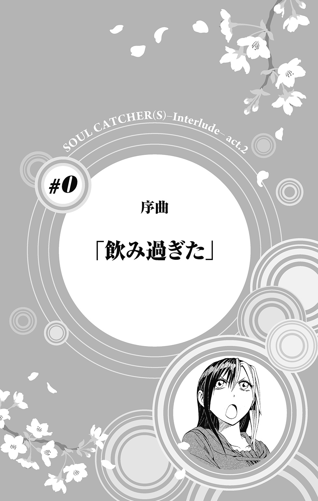

| SOUL CATCHER(S)―Interlude― act.2 過ぎゆきて春 | |
| 神海英雄 & 成上真 | |
この本は縦書きでレイアウトされています。
また、ご覧になる機種により、表示の差が認められることがあります。
ＣＯＮＴＥＮＴＳ
＃０ 序曲
＃１ 歌曲集
＃２ フルート協奏曲
＃３ 交響曲第９番
＃４ 練習曲
＃５ 作品番号Ｄ８１０
＃６ 歌曲
★この作品はフィクションです。実在の人物・団体・事件などには、いっさい関係ありません。

女子会っちゃあ夜景の見える高級レストランよね、とか若い身空でオヤジくさいことを言い出したのはもちろんのこと刻阪楓のほうだったのだが、夜景が見たいってんならトコトンやってやろうじゃない、と、いささか普段の意趣返しのような気持ちとともに、ワンピースにジャケットでいつもよりフォーマルに決めた刻阪楓を助手席に乗せ車を飛ばし、はるばる来たぜ富士見峠。谺夕子、人生何度目かの大失態。
バカと煙は高いところが好き、というが、あの岩の上に登ると――少々足元注意だが――さらに夜景が綺麗に見える、と聞いて十三センチのハイヒールも顧みず岩に登るということがない刻阪楓など刻阪楓ではなく（※よいこは真似をしないでください）、夜景を前に感動を覚え、さればとバイオリンを弾きたがらない刻阪楓にもかつてお目にかかったことはない。
そしてタチの悪いことに、その刻阪楓というバカがひとたびバイオリンを構えると、クラシックの本場欧州でも高い評価を得る新進気鋭の〝美人〟バイオリニスト、カエデ・トキサカに変貌する。なお、能力がある女性にとりあえず〝美人〟とつけて紹介するのは国を問わずマスコミの常套手段であるのでそれにあえて追従しただけで、決して谺夕子個人の意見ではないことは重ねて申し上げておく次第。
「......似てないようで、やっぱり姉弟だな」
岩の上で夢中で弓を弾き続ける楓を見やりながら、近くの自販機で買った缶コーヒーを相手にひとり呟く。楓の弟、刻阪響は、現在の夕子の教え子の一人だ。鳴苑高校でこの春二年生になったばかり。サックスの実力は超高校級なれど、楓に似ず控えめで穏やかな性格――と思っていたこともあったのだが、去年の秋、文化祭公演の本番でも聞かせなかった凄まじいカーペンターズを突然吹いたかと思いきや、神峰翔太という音楽の経験は学校の授業のみといういわば初心者を連れてきて、こいつを指揮者にしたいとか無茶を言いだした。
それだけならただちょっとした気の迷いと言ってもよかったが、その神峰翔太が指揮者として吹奏楽部に参加してからというもの、鳴苑高校吹奏楽部のなかで確かに何かが変わってきているものだから、その慧眼もまたやはり姉弟というほかない。
「はー、楽しかった！ そういえば夕子ちゃん、ごはんまだ？」
春宵まだ寒い季節、額に少し汗を浮かべた楓が、万雷の拍手を背負って夕子のもとへと戻ってくる。
「先輩を〝夕子ちゃん〟はヤメロっていつも言ってる。バイオリンはもういいの？」
「ちょっと弾き足りないけど、あそこ占有しちゃ悪いし。おなかすいたし」
夕子は腕時計で時間を確認する。弾き始めてから小一時間。楓にしては、たしかに早く切り上げたほうだ。しかし。
「ふもとのレストラン予約してたけど、間に合いそうもないからキャンセル済み」
「えーっ!? キャンセルって、じゃあごはんどうするの!? おなかすいたよ!?」
「ごはんを食べるところくらいどこにでもあるわよ」
「おいしいところじゃないと」
「わがまま言うな」
空になったコーヒー缶を近くのクズかごに投げ入れながら夕子が答える。
「なんだか少し胃もたれ気味だし、軽くすますか。屋台のおでん」
「疲れたからこってりしたもの食べたいな！ フレンチなんてどう？」
「立ち食いそば。コロッケ入れればこってりするでしょ」
「イタリアンもいいね！ 分厚いベーコンをたっぷり入れたカルボナーラ！」
「立ち食い屋のマカロニサラダ」
「ポルトガル！ スパニッシュ！ とにかくお肉っ！」
いまいち相容れない主張を交わしつつ車に乗りこんだ夕子は、楓がシートベルトをしているのを確認し、車を発進させる。
今日は、楓に相談したいことがあって呼び出したのだが――その演奏を聞いていたら、同じところをひとりぐるぐると停滞したまま悩んでいる自分が、なんだかバカらしくなってきた。
「楓、弟クンとお友だちに伝えて」
「うん？」
「スプリングコンサートの件、許可する、って」
「いいけど、なんのこと？」
「そう言ってくれれば、わかるから」
「......うん、わかった」
「そうと決まれば、今日は――」
「ねえ、焼き肉は？」
「あんたホルモンいけたっけ」
「もちろん大好き！」
「ここからだとちょっと遠いけど、いい店知ってるわよ。焼酎百種に代行運転付き」
「夕子ちゃんたらさっすがー！」
楓に言われながら、夕子はアクセルを踏みこんだ。
今夜は少し飲み過ぎそうかな、という予感とともに。
ドレミファソラシド。
蒼天突き抜けるほど青い、春の日だった。
あんなふうに楽器を鳴らしてみたいと思った。
楽団の頂点に座し、黄金に輝く楽器の上で踊るように指先を動かして。完璧な呼吸、完璧な音程、完璧なリズムで、主旋律の中の主旋律を、ただ一人高らかに奏でる。
あの人のようになりたい、と。
そう思った。
ドシラソファミレド。
「――吉川さん、は」
「え？」
「あ、ごめん。吉川さん、だよね？」
「はい！」
「前も楽器やってたの？」
「あ、はい！ やってました」
トランペットパートの新入生指導担当だという優しそうな先輩に、佳苗は少し緊張気味の顔を向けた。
右手には、トランペットから取り外した歌口部分が握られている。
吉川佳苗。鳴苑高校に入学したばかりの、高校一年生。
手を通して間もない新しい制服は、まだしみのひとつとてなく、のりがきいていて少し硬い。志望の高校に受かったらやってもいい、と親に許可をもらい染めた少し明るめの髪を、肩までのボブに切りそろえ軽く内向きにブローしている。
鳴苑高校では例年、入学年の四月いっぱいを各部活動の新入生の仮入部期間と定めている。この期間はどこの部も、いい新入生を獲得しようという上級生の熱気と自分の三年間を預けるにもっとも良い場所を探す新入生たちの初々しさとで、何かと浮き足立っていて。
春風に乗って新緑の香り舞いこんで来るこの音楽室もまた、吹奏楽部入部希望者たちが奏でる異音騒音でにぎわっていた。
「そうだよね。いきなりいい音出してるから、そうだと思ったんだ」
笑顔の佳苗に、二年の奏馬俊平、と名乗ったその先輩は、さわやかな笑顔でそう言った。
叩けばとりあえず音らしいものは出るピアノなどの楽器とは違って、管楽器は、まず音らしい音を鳴らすことに多少のコツが必要だ。実際、吹奏楽は初めてだと言っていた佳苗の左に座る一年生は、別の上級生の指導を受けながら顔全体が真っ赤になるほどきばってマウスピースに息を吹きこんでいるものの――そちらからは、空洞のなかを空気が通過していくだけのスカスカ乾いた音が聞こえてくるばかりである。
「経験者はマウスピースからじゃなくて大丈夫だよ。本体くっつけてみようか」
「えっ」
「うん？ 大丈夫、上手いからって強引に勧誘したりはしないから！」
「あの......でも」
「えっと......入部したら、トランペット希望なんだよね？」
奏馬は少し声をひそめ、佳苗に尋ねた。佳苗は奏馬につられるように少し前かがみになり、小さくうなずく。すると奏馬がさらに顔を寄せ、そっと耳打ちした。
「トランペットパート、今年は特に希望者が多くてさ。顧問の谺先生、パート振り分けの時に楽器の経験の有無をけっこう重視しているみたいだから。経験があるなら、アピールしておいたほうが有利だと思うよ」
佳苗は、その言葉に表情を曇らせた。そして同時に、そうだろうな、とも思った。
「ね？ だから」
「あの......ごめんなさい。経験者って言っても、中学のころにやっていたのは別の楽器で」
「あ、ああ。そうなんだ、ごめんね」
奏馬は一瞬眉をひそめ、そんな表情をした自分をごまかすように、ことさらに作り笑いをする。
「何をやってたの？」
「......ユーフォニウム、です」
「ああ、なるほど！ ユーフォはいい楽器だよね」
奏馬はそう言いながら、同じく音楽室内で練習しているユーフォニウムパートのほうへ目をやる。
佳苗もまた、見るまい見るまいとしていたそちらのほうへチラリと目を向けた。
ユーフォニウムパートでは、ショートカットでちょっときつめの顔立ちをした先輩が、たった一人だけのパート希望者の新入生につきっきりになっていた。
それに対しトランペット希望者はすでに二十名を超えている。
なかには、すでに自前の楽器を持参して有名曲のサビを鳴らしている新入生も。
（〝経験の有無を重視〟......か）
つい先ほどの奏馬の言葉を思い出し、佳苗は心が暗くなった。
木管、金管、打楽器、それに時に弦楽器やピアノが加わり編成される吹奏楽のなかでも、トランペットはもっとも花形となるパートである。それだけに人気も高い、が、楽団全体としての音のバランス上、全員のパート希望を聞き入れるわけにもいかず、大体において過剰なトランペット希望者からあぶれたメンバーは、他のパートに振り分けられることになる。
いっぽう、音楽に疎遠な者にはその存在すらなかなか認知されづらいユーフォニウムには――トランペットのような華やかさや、チューバのような大きさや、トロンボーンのような形状の独特さや、あるいはホルンのような難易度の高さなど、未経験者にもすぐに分かりやすい特徴づけのないユーフォニウムという楽器は。
本来その楽器が持つ、たとえば大地の豊穣さを思わせる柔らかく大らかな音の魅力、はさておいて、なかなかをもって人気があるとは言いがたいパートだった。となると、トランペットへの転向を考えている佳苗にとって、この場合ユーフォ経験者であることがマイナスに働くことは明白である。
「あのさ」
視線を戻した奏馬に、佳苗は心のなかで思わず構えの姿勢を取った。
どうしてユーフォやめたの？ ユーフォできるならやってほしいなあ。新入生の人数があっていなくて――。
（――言われるかな。でも）
鳴苑吹奏楽部は、近年では目立った結果は残せていない。けれど、堕ちたりとはいえいまだ県内強豪校の一角に数えられることは間違いない。部員の好みよりもその腕前を重視するのは当然といえば当然だった。
佳苗だって、そんな事情はよくよくわかったうえで、あえてトランペットを選んでいる。元のパートに戻ることをゴリ押ししてくるようなら、多少気まずくなってもいいからはっきり断ろう、と。そう身構えた矢先、佳苗の予想に反して奏馬は、
「じゃあやっぱり、本体くっつけてやってみようよ」
と、にっこり笑った。
「なんにしても金管楽器をやっていたなら、トランペットだって簡単だよ」
「あ、え、えっと、そう......ですか？」
あっさりそう言われると逆に、そんな単純なものじゃないでしょう、という気もしてくる。佳苗は少し不信感を抱きながら奏馬を見る。けれど奏馬はことさら冗談めかして続けた。
「そうだよ。だって俺にだってできるくらいだからね」
「そんな」
「ほんとほんと。吉川さんならきっとすぐ俺より上手くなるんじゃないかな」
「そう......だと、いいんですけど」
「ちょっと待ってて。そうと決まれば楽器取ってくるよ」
音楽準備室のほうへ走っていく奏馬の後ろ姿に、佳苗は元気よく返事をする。
「はい、ありがとうございます！」
奏馬の、謙遜が過ぎるジョークは大して面白くはなかったが――パートをゴリ押しされなかったことで、佳苗の口元にはようやく安堵の笑みが浮かんでいた。
「そういえば、名前、聞いたよ」
「え？」
智香がにんまりしながら言うのに、佳苗は我知らず赤面した。
体験入部の期間、一年生が楽器に触れるのは一時間だけ。その後は二、三年生たちの本練習の時間だとかで、佳苗が中学時代からの友人と連れ立って学校を出た時、空はまだ明るかった。
その友人、久住智香は、同じ中学で同じ吹奏楽部に入っていた。担当楽器はホルン。どちらかといえば大人しい性格をしている智香と、どちらかといえばサバサバした人と話が合う佳苗とは、何度かグループで遊んだことはあるものの、現役時代ものすごく親しい、というほどの間柄ではなかった。
けれど同じく鳴苑高校を受けると知って以来、今では、受験の苦楽を分かち合った得がたい友人である。
長い髪をサイドテールにしているのが中学時代からの智香のトレードマークで、それは高校になっても相変わらず。結んだ根元に中学のころは校則で禁止されていたシュシュがくっついているのが、智香らしい高校デビューポイントだった。
鬼が出るか蛇が出るかの気持ちで行ってみた、強豪校の吹奏楽部が思いのほか好感触だったことに興奮さめやらぬ二人は、そのまま駅前のファーストフード店に入る。
打楽器パートがものすごくハイテンションだったよね、という話に始まって。クラリネットにいた美人の先輩はとても面倒見のいい人らしい、サックスパートに入った同級生ですでにプロともコラボしているような有名人がいるらしい、フルートにもやたらうまい一年生がいると思ったら二年の先輩が間違って混ざっていたようだ、バスクラリネットの先輩で一人性別がよくわからない人がいる、などなどなど。今日一日だけで知った部活の情報を競うように交換し、一息ついたところで、智香が唐突に言った。
「名前、わかった......って？」
佳苗はあえて知らない振りをしようとしたが、それは完全に失敗した。
鳴苑に入ったはいいけれど、吹奏楽部への門を叩くか否かはまだ決めかねていた時に、智香を誘って観に行った。
体育館で行われた部活勧誘会の、新入生歓迎のミニ公演で――。
「例の、佳苗ちゃんに転パート決意させたトランペットの人。管崎先輩に聞いたら......あ、ホルンの先輩なんだけど。新歓公演でパートの中央に座ってて周囲から浮き立つくらい上手だったトランペットの人、って聞いたら、間違いなくあの人だろうって。まだ二年らしいよ。良かったね、佳苗ちゃん！」
「......何が？」
「だって、三年生だとあと一年しか一緒にいられないじゃない？」
「智香、あのね、言っておくけど、トランペットには前からちょっと興味はあったの！ 新歓公演で感動したことは、ただのきっかけであって......そういうんじゃないからね！」
「そう？ でも顔もけっこうかっこ良かったよね」
「知らないわよ！ でも、あれれ？ そんなこと言う智香こそ、実は......」
「や、やめてよー！ 私、ああいう恐そうな人苦手だもん」
「とか言いつつ、初めは苦手だなっていうタイプこそ実は......」
「佳苗ちゃんこそ、初めは憧れからだんだんと......」
「私のはそんなんじゃないって！」
「私もだから！」
お互い牽制し合いながら、つまりはまだ二人ともそんな話を本当に我が身の上に降らす予定はない、ということを確認して、手元の飲み物に口をつける。
「いい部だったね」
智香が、ストロベリー味のシェイクを少し口の端にくっつけながら、しみじみと言った。
「そうだね、設備や楽器はさすが、って感じだし」
いっぽう、コーヒーフロートを一口すすって口をおさえ、上にのっかったバニラアイスをストローでつつきながら、佳苗が答える。
「先輩の指導も全然違った。優しいのにわかりやすいの。今日一日だけで、中学の頃の自分超えちゃったかも、なんて」
「おっ、智香、言うなー」
佳苗は、帰り際智香が挨拶していた、ホルンを抱え眼鏡をかけた優しそうな女の先輩の顔を思い浮かべながら智香を指さす。
「えへへ。まあ、今のはちょっと言いすぎ。でも気分としてはそんな感じ。やっぱり高校って違うね」
「だね」
「やっぱり久しぶりに楽器吹くと、口とお腹の筋肉がピリピリしちゃう。受験中のブランク、早く取り戻さないと」
「智香はもう、入部決めたの？」
「ん？ 佳苗ちゃんは？」
「んー......」
佳苗は言葉を濁し、手元のコーヒーフロートをぐるぐるとかき混ぜる。上にのっかったバニラアイスが、佳苗の作るうずまきに巻きこまれるようにして、端からじわじわとアイスコーヒーのなかに溶けこんでいった。
佳苗がこのファーストフードチェーンで頼むのは、大抵がメロンフロートだ。メロンソーダにバニラアイスをのっけたそれは、甘いばかりで苦さはない。高校生になったんだから、と頼んでみたコーヒーフロートは思った以上に苦くて。上からミルクとガムシロップをしこたまかけたけれどまだ苦くて。少し持て余しぎみになりながらひたすら攪拌を続けている。
あの後、渡された楽器を実際に吹いてはみたものの――ラッパ口から出てくるのは、心に描く理想とはかけはなれた、ポワン、というどこか間の抜けた音ばかりで。佳苗はそれを思い出し、少し憂鬱な気持ちになった。
「入るつもりではあるけど......パート、やっぱり、どうしようかな、って」
「トランペット、難しかった？」
「や、難しいってほどじゃ......音を出す要領は、ユーフォとそんなに変わんない。ホルンにでも転向しようと思ってたら大変だったかもしれないけど」
「ホルンて、言うほど大変じゃないって」
「〝金管で一番難しい楽器〟でしょ？」
「慣れの問題じゃないかな。私からしたらユーフォだって吹き方わからないもん」
「そうかな」
「そうだよ。前にちょっと吹かせてもらったけど、佳苗ちゃんみたいにいい音、どうやったら出せるのか全然わからなかったもん」
「そ、そう......？ べつに、普通に吹けばいいだけだと思うけど」
佳苗は、思わずユーフォニウムをかまえるようなポーズをとった。三年やってきたその楽器の感触は、自分の一部のようによく覚えている。膝にのせ、両腕で抱きかかえるようにして吹くあの大きな楽器の、体温が伝わって少し暖かくなった金属の感触と、ラッパ口から出てくる柔らかい音。
いっぽうトランペットは、両手で摑み、両手に持って顔の前に掲げ、遥か前方を目指すように高らかに吹きだす。
楽器といえばユーフォニウムに慣れた佳苗には、その感覚が、どうにも心もとない感じがして仕方がなかった。
「......でも、なあ」
新歓公演での、あまりに鮮烈なあの感動を思い出し、佳苗は首を横に振る。
「まあ、でも、そうだよね。智香の言うように慣れの問題、だよね。別に金管内の転向なんて、学年の途中にもあるような話だし」
「トランペットに挫折したら、いつでもユーフォに戻って来てね！」
「ちょっとー、不吉なこと言わないでよ」
「あ、ごめん。でも佳苗ちゃんのユーフォの音、私好きだよ」
「え......」
唐突に褒められて、佳苗は一瞬言葉を失った。
（私のユーフォなんかごくごく平凡な音なのに。智香ったらさっきから気を使ってくれちゃって......）
「......ありがと」
「どういたしましてー」
「私、智香と同じ学校で良かった」
「え？ 私も！」
そう言ってお互いにっこり笑うと、ちょうど二人の携帯に、帰りが遅いことを心配した親からのメッセージが入ってきた。
「やばっ」
「帰ろう！」
智香と佳苗は、頼んだ飲み物の残りを飲み干そうとストローを口にする。甘い甘いバニラアイスがとけきったコーヒーはそれでもやっぱり苦く、結局少し残してしまって。
肝心の〝あの先輩〟の名前を聞きそこねてしまったことを佳苗が思い出したのは、夜ベッドに入ってからのことだった。
一週間ほどが経った。
一度聞きそこねるとなかなかきっかけというのはつかみづらいもので、〝あの先輩〟の名前を、佳苗は未だ知ることができないでいた。
（改めて聞くまでもなく、部活に行ってれば自然に会えるだろうと思ってたのに......いまさら智香に聞くのも、やっぱり～って変にニヤニヤされそうだし。かと言って同じパートの先輩に〝パートで一番上手かった人〟とか聞くのはなー......まだ二年生だって言うし、ちょっと気まずいよね）
今日も今日とて一年生の練習が終わり、帰る時間である。外はどんより花曇り。教室に忘れ物をしたのを思い出して、普段とは少し違う、無人の廊下を昇降口へと向かって歩いていた。
「――いいかげんにしなさいよ」
と、階段へ繫がる角をまがろうとした佳苗の耳に、きつい調子の女子生徒の声が飛びこんでくる。
思わず足を止め、柱の影に身を潜めた。
「俺に、どうしろと言うんだ」
女子生徒に応じるのは、淡々とした男子生徒の声。
（うわー......こんなところでケンカとかやめて欲しい）
どうやら険悪な雰囲気が漂っているらしい場所を、堂々と横切る度胸はさすがにない。けれどこの階段を通らないと、昇降口までは遠回りになる。
（早く終わってくれるといいけど。智香、待っててくれるかなー）
「あんたがどうすればいいか、なんて、さっき言った通り」
「欠席届は出している」
「それは、谺先生から聞いてる」
（谺先生......って、もしかして、ケンカしてるの吹奏楽部の先輩？）
佳苗は、聞き覚えのある吹奏楽部顧問の名に好奇心にかられ、物陰からひょいと顔を出した。
（あ......邑楽先輩！）
クラリネットパート二年の邑楽恵は、面倒見が良いという事前の噂通りの先輩だった。木管パート希望者を初めとして、一年女子の大半はすでになんらかの形で邑楽のお世話になっている。
佳苗も一度声をかけてもらったことがあるが、木管のなかでも主旋律を担うことが多いクラリネットのイメージ通り、美人で気が強そうで、いかにも姉御肌という感じの先輩だった。が。
どうやら、男子学生が階段を降りているところを邑楽が呼び止めたらしい。男子学生は向こうを向いていて、顔は見えない。いっぽう腕組みして踊り場に仁王立ちしている邑楽の背後には、見覚えのある吹奏楽の女子部員が三名ほど顔を連ねていた。
（うわー、女四人対男一人。ザ・女子、って感じ......）
相手に何か文句をつける際、女子複数でつるんで行動するというのは佳苗にもおぼえがある。けれどこうして端から見てみると、あまり気持ちのいいものではない。
（邑楽先輩ってもっと気のいい人かと思ってたんだけど、けっこう恐いのね）
「用事があるっていうならしかたないってあたしたちだって思ってたけど、でも、毎日この時間くらいまで図書室に残っているっていうじゃない。だったら少しくらい顔を出しなさいよ」
「この時間は、まだ本練習が始まっていないだろう。顔だけ出しても意味がない」
「本練習が始まっていない時間なんじゃなくて、新入生たちの練習を見ている時間なの！ 後輩の指導は、先輩としての役目でしょ！」
邑楽が、叩きつけるように言った。
「言っとくけど、あんたに憧れて吹奏楽部に入ってきた新入生もいるんだからね。あの先輩やめちゃったんですか、本当は部員じゃないんですか、って、何人ものコが言ってるのよ」
（う、それはわかる）
佳苗の中で悪いほうに傾いていた邑楽への印象が、くるんと反転した。
（木管の男の先輩かな。憧れられるほど上手なのに後輩の指導もしないで自分の勉強ばっかりとか、たしかにそれはちょっと......）
「〝偶像〟が必要なら、お前がいるじゃないか」
「そういうイヤミはやめてよ。新入生は〝あんた〟に憧れて入ってきたって言ってるでしょ」
「ほうっておけばいい。それでやめるようなら、どうせ大した演奏はできない」
（うわ、そんなこと言っちゃうんだ......性格悪っ！）
男子生徒は、邑楽とは対照的な淡々とした口調で、しかし言っている内容は辛辣きわまりない。佳苗は心の中で俄然邑楽を応援し始めた。その邑楽が、まさに佳苗の心を代弁するように叫ぶ。
「あたし、あんたのそういうところが大っ嫌いなの！」
（そうそう！ 最低！）
「見解の相違だな」
女子生徒の激高がまるで気にならないようすで男子生徒はそう答え、思い出したように続けた。
「あと言っておくが、昨日、音楽室の前までは行ったぞ。どういう新入生が入ってきたのか見ておこうと思ってな。だが、奏馬が、来なくていい、と言ったんだ」
（奏馬先輩？）
突然の、よく知った名前の登場に、佳苗は目を見張った。
「あんたがろくでもないことしようとして、奏馬を怒らせたんじゃないの？」
邑楽が皮肉っぽい口調で言う。
「何もしてない。ただ......」
「ただ？」
「新入生の練習を聞いたら、明らかにトランペットじゃない音を出してるやつが混ざっていたからな。それを本人に言わないのか、と奏馬に尋ねたら、新入生の前には顔を出さなくていい、と」
（――トランペットの音......じゃない？）
佳苗がその言葉にドキリとしている間に、邑楽と、男子生徒の言い争いはヒートアップしていた。
「そんなの、そう言われるに決まってるでしょ！ まだ四月なんだから音ができていないのは当たり前じゃない。奏馬も苦労するわね」
「当たり前かどうかは知らん。思ったことを言っただけだ」
「だからあんたはみんなから嫌われるの」
「問題点を指摘するから嫌われるというのなら、嫌われて構わない」
「......あんたからみたら、問題点山積みでもね。みんな吹奏楽が好きなの。でも、好きだから、努力したからって、誰もが同じようにできるってわけじゃないでしょ。才能ってこともあるし......それぞれの事情もある。でも、それでも、それでも吹奏楽が好きだから、毎日部活来るし、自分にできる範囲で頑張ってるの。いくら人よりできるからって、めったに練習にも来ないあんたに、上から目線でああだこうだと言われたくないのよ」
「そこそこ頑張ってそこそこの演奏ができればそれで満足か？ 邑楽、お前のような考え方をしていては、何も面白くならないだろう」
「余計なお世話。私たちはこれでじゅうぶん部活を楽しんでる。あんたの〝面白い〟は、みんなの迷惑なの」
「俺に部活に来いと言っていることと、矛盾していないか」
そう返す男子生徒に、邑楽は首を横に振る。
「今のはあたしの気持ち。あんたに来いって言ったのは先輩からの意見。金管の先輩たちから直接相談されて、さすがに動かないわけにはいかないからね。どうせあたしがなに言ったって、あんたが来たいと思えば来るし、来たくないと思えば来ないんでしょ」
「先輩たちも、直接は言いづらいから恵に押しつけてきてた感じだもんねー」
「それでメグだけじゃ大変だって私たちもついてきたんだもん」
「メグの大変さ、少しは分かりなさいよねっ!!」
邑楽の後ろの女子部員たちが、口々に言った。
「〝偶像〟やるのも気苦労がたえないな」
「なにそれイヤミ？」
「さあな」
「フン......そう言えば、最近あんた、裏じゃあだ名で呼ばれてんのよ。どんなあだ名か知ってる？」
「興味ないな」
「〝暴君〟だって。好き勝手放題にまわりを振り回すから。ピッタリよね」
「そうか」
男子生徒が、少し腕を持ち上げた。腕時計で時間を確認したようだ。
「......悪いが、そろそろ終わりにしてくれ。これから塾がある」
「ハイハイ。言っとくけど......金管パートのことまではさすがに口を出せないけどさ。クラリネットのコたちいじめたら、ただじゃおかないからね」
そう邑楽は男子生徒の顔を睨みつけ、階段を上がっていく。いっぽう男子生徒は、その後ろ姿を見つめたあと、階段を降りてこようとした。
佳苗は慌てて物陰に隠れた。心臓の鼓動が、頭のなかで鳴っているようだった。
ドレミファソラシド。
ドシラソファミレド。
昨日の花曇りから、天気は小雨に変わっていた。
今日のトランペットパートは、音楽室ではなく空き教室を使わせてもらっている。
構えたトランペットで八小節ほど。音階を追うだけの簡単な練習曲を吹きながら、佳苗は昨日チラリと見た男子学生のことを思い出していた。
（あの人......憧れて入ってきた下級生がいるって。そういえば、あの人に、似ていたような......でも、全然違ったような気もするし......）
「仕方ないんだよ。あいつ、普段から練習にはほとんど出ないから」
「ええ!? それ、いいんですか？」
（......練習に出てない？）
ぼんやり考えごとをしていた佳苗の耳に、数人挟んだ向こうで会話している声が聞こえてきた。
（昨日の人のこと......？）
「もちろんダメ。練習出ないやつはメンバーから外されると思ってて。だけど、あいつの場合練習来なくても上手いからさ。谺先生も特例として認めてるっぽい」
「ほんと、メッチャ上手いですよね。さぞや毎日猛練習してるんだと」
「楽器自前で持ってるから、多少は自主練もやってるんだろうけど。ちなみにあいつんちデカイ病院やってるから、楽器もめっちゃ高級品」
「ええ!? 家が病院やってるってことは、将来はお医者さんですか。すごいですね」
「知らねーけどたぶんそうじゃね。ああいうなんでもできるやつってたまにいるんだよなー。演奏聞いてるだけの分にはスゲーって思うけど、隣りで吹かれると上手過ぎてこっちがヘコむよ」
「そういうものですか」
「そーいうもんだよ。なんてったってあいつのあだ名は......」
「おい、そこ！」
突然。別の新入生に楽器の持ち方を教えていた奏馬が、佳苗の頭越しに鋭い声を投げた。
「奏馬、なんだよ」
「練習中は私語厳禁！ なのに先輩が率先して無駄話してちゃだめだろ？」
「ハイハイ」
「あ、それと、えーっと。吉川さん？」
「はい！」
続けざまに奏馬に呼ばれ、返事をする。佳苗もまた人の話に聞き入っていたことを怒られるのかと思ったが、
「上手くなってきたよね。練習曲、次のページ行っちゃってもいいんじゃないかな」
幸いにもそうではなかった。
「上手く......」
けれど佳苗は首を傾げた。たしかに、音階通りの音は出るようになった。運指表とにらめっこしなくても間違わなくなった。けれど。
「......なって、ますか？」
佳苗は、首を傾げた。
「もちろんだよ！」
奏馬が輝くような笑顔で答える。
奏馬のトランペットを聞いたことがある。お手本で、と吹いてくれたものだ。感動を覚えるほどではないにせよ、上手ではあった。
（だから......その奏馬先輩がこう言っているから、これでいいんだよね......たぶん）
奏馬に言われた通り、佳苗が練習曲集のテキストめくろうとしていた、その時。
「――音羽？」
「え？」
奏馬が聞いたことのない声で、知らない名を呼んだ。
佳苗は思わず振り向く。
奏馬が見ているほうには――手袋をした左手にトランペットのケースを持ち、右手をポケットに入れ、ずかずかとトランペットパートのほうに向かって一直線に歩いてくる男子生徒がいた。
「音羽、しばらくは塾が忙しいんじゃなかったのか？」
奏馬が、慌てたように音羽のもとへ駆け寄る。あまり歓迎しているとは言いがたい雰囲気だ。
「時間がないのは確かだが、邑楽に、来いと言われた」
音羽が答える。
「邑楽が？ ......なるほど」
間違いない。
（やっぱり、昨日、邑楽先輩に怒られてた人だ......）
昨日の言い争いは、佳苗が一方的に知っているだけだ。なんだか気まずくて、佳苗は音羽と呼ばれた先輩から目をそらした。
いっぽう奏馬もまた、なにか気まずそうに続ける。
「じゃあ......まあ、せっかく来てくれたことだし、とりあえず挨拶くらいは」
「わざわざ新入生がいる時間に来たんだ。全員の音を聞かせろ」
「音羽！ いきなり来て勝手をするな！」
奏馬と音羽の会話を聞いていた三年生が怒鳴る。
「先輩として、後輩を指導しようっていうんです。何か問題がありますか、先輩？」
音羽が、いかにもうんざりしたようすで答えた。さきほどまで和気あいあいとしていた室内が、一気に険悪ムードに変わった。
「音羽、言葉に気をつけろ！ すみません先輩」
「お前」
「え？」
突如現れたその男――昨日の邑楽の言葉によれば〝暴君〟とあだ名されているというその男は、右手の人さし指で、佳苗をさした。
「吹いてみろ」
「わ、私......ですか？」
突然の指名に、戸惑わないはずがない。
「あの、私、まだドレミを吹けるようになったばかりで」
「それで構わん。吹いてみろ」
音羽は、教室の隅に寄せた机の上に楽器ケースを置き、そのままそこに軽く体を預ける。
「音羽！ ごめんね吉川さん、コイツの言うことは気にしないで」
「え、えーっと。でも、大丈夫です。吹きます！」
そう言って佳苗はトランペットを構えた。
「でも......」
奏馬の制止を無視し、先ほどから何度も繰り返した八小節の練習曲を鳴らし始める。
もしかしたら――もしかしたら、憧れの人かもしれない先輩に、音を聞いてもらうチャンスだ。
ドレミファソラシド。
呼吸、リズム、運指。
ドシラソファミレド。
自分が、今できる最高のものになるように。
音羽は、そんな佳苗をじっと見つめながら、演奏を聞いていた。
最後の一音まで丁寧に吹き終えて、佳苗はトランペットを下ろす。音羽は、無言のまま、じっと佳苗を見た。
（な、なに？）
「音羽、うまいだろ？」
無言のままの二人の間を、取り持つように奏馬が口を開く。音羽が何も言わないことに、少しほっとしているようだ。
（うん......私も、これまでのなかでは一番よく吹けた！）
佳苗もまた、音羽の顔をぐっと見返す。
「中学まではユーフォニウムをやっていたんだって。さすがの肺活量で、音程も安定しているし......」
「......なるほど」
ようやく、音羽も口を開く。
けれど、次にその口から出て来た言葉は――
「だからか、ひどいな」
「......音羽！」
音羽の言葉に、奏馬が慌てる。
奏馬以外の他の先輩たちも、チラチラとこちらをうかがっていた。
（ひどいって......私の、演奏のこと？）
佳苗は、言われたことの意味をつかみそこねる。あまりのショックに、脳が麻痺してしまったようだった。
「そういう言い方はないだろう！ 始めたばかりにしたら全然上手じゃないか」
「お前のそういうところ、俺は......いや」
音羽は、途中まで言って言葉を区切る。そしてしばらく逡巡したのち、佳苗のほうへ歩いてきた。
（え......え？）
手を伸ばし佳苗が持っていたトランペットを取り上げ、歌口を口に当てる。
佳苗が吹いた、たった八小節の練習曲を――ただ音階を追うだけだと思っていたその練習曲を、音羽が吹く。
それは、音階をただ〝追う〟のではない。
音のひとつひとつを、華やかに歌い上げる、〝音楽〟だった。
（この人の......音！）
新歓公演で、ただ一人高らかに奏でていた、トランペットの強い高音。
（間違いない、この人だ......この人が、私の、憧れの......）
奏馬も、音羽を非難していた三年生も、教室の誰もが静まり返るなか、音羽の演奏が終わる。外の静かな雨音だけが聞こえる教室で、音羽は楽器を佳苗に突き返した。
「あんな吹き方をするな。楽器が可哀想だ」
「え......」
「お前の音は、トランペットの音じゃない」
「音羽、そんな言い方は......！」
奏馬が音羽に、何か抗議してくれている。
けれど佳苗は、ひざの上においていた手を、ただ強く握りしめた。
（......あ）
夕暮れの雨。教室のあちらこちらから管楽器の低音が響いてくるなかで、楽譜をめくっていた佳苗の手が止まる。
「先輩、これですか？」
先週入ったばかりの新入生が、少し不安げな表情になった。
「えーと、うん。そうだね。これにしよう」
八小節を使って、一オクターブの音階を刻んでいく。佳苗は、その譜面を指さした。
「とりあえず、見本やるから見てて」
ひざの上に横たえていた自分のユーフォニウムを抱え上げ、目の前に開かれたその譜面を吹き始める。
（懐かしいな......）
入学したばかりのころ、トランペットで、最後に吹いた曲。たしか、これと同じ曲だった。
（今日と同じような、小雨の日だったっけ。あの日は、泣いたなー）
「......こんな感じ。じゃあ今度はそっちの番」
「はい！」
管楽器は高校になって初めてだという新入生が、ユーフォニウムのマウスピースに口をあてがい佳苗と同じ譜面を同じように吹く。同じ――ように吹いているつもりなのはわかるのだが、音程はあっちこっちと散らかった。
「......すみませ～ん......」
「初めはみんなそうだって。すぐに上手くなるから大丈夫」
「でも、先輩と同じ楽器を使っているとは思えないですよ同じユーフォニウムとは......」
「そんなに落ちこまなくても、ちゃんとユーフォニウムの音になって来てるから」
「えーっ？ そりゃ、ユーフォニウム吹いてるのにトランペットの音が出たらショックじゃないですか」
佳苗の発言を、苦渋のフォローだと思ったのか、新入生は苦笑いで首を傾げる。
（うーん、そういうことじゃないんだけど......）
と、佳苗は思った。けれど、口ではうまく説明できない。
（後輩の指導って難しいな。私も去年、先輩から見たらこんな感じだったのかな）
とりあえず、口に出しては、
「じゃあもう一回、今度は一緒に吹いてみようか。何度か繰り返してみよう」
と言った。
「はい！」
ドレミファソラシド。
ドシラソファミレド。
（ん？）
ふたつのユーフォニウムの音が重なる......と思っていたら、なにやらホルンの音まで混ざってきた。
今日のパート練習は、ユーフォニウムとホルン合同で空き教室を使っている。楽団の編成上、近くに配置されることが多いこのふたつの楽器は、パート練習も隣り合った場所取りをすることが多いので、一緒の教室につめこまれてもさほど不自由はない。佳苗は、ホルンパート側の見知った顔をわざとらしく睨んだ。
（もー智香！ 新入生の指導中に、勝手にセッション始めないでよ）
（だって、佳苗ちゃんが、乗りたくなるいい音出してるし）
誰かが曲を吹いていて。なんとなくいいな、と思うと、ついその曲に相乗りしたくなってしまうのが吹奏楽部員のさがである。
（しゃあない。この楽譜に免じて許すか）
憧れていた音羽に、トランペットの音じゃない、と言われて。
もうトランペットはできないと落ちこむ佳苗に、事情を知らない智香は言った。
――こう言うと怒るかもしれないけど、佳苗ちゃんはユーフォニウムでいいじゃない。
――私、佳苗ちゃんの音、本当に好きだから。
――強いけど優しくてすごく落ち着く。佳苗ちゃんみたいなユーフォニウムの音――
ドレミファソラシド。
ドシラソファミレド。
八小節で終わるその曲を何度も繰り返しているうち、いつの間にか、教室全体がひとつの旋律で満たされて――。
（......おっと）
小雨に育まれた、ユーフォとホルンが作る豊穣の大地。
そこへ、教室の外から一際華やかな音がやってきて、音の大地を大輪の花咲く花畑へと変えた。
「音羽先輩！」
直後、聞き慣れた声が、その華やかな音を中断させる。
「廊下で楽器吹いちゃダメっスよ！」
「神峰か。誰がそんなことを？」
「邑楽先輩です」
「......まあ、無粋なことを言うな。この時間なら校内には人が残っていない。通りがかりにいい音が聞こえたのに、そのまま通り過ぎるなんて面白くないことできるものか」
「せめて教室のなかに入って吹くとか」
「奏馬が、新入生の仮入部期間中は他のパートにちょっかいかけるなと言うからな」
「外から音を出すのはちょっかいのうちじゃないんスか？」
「............ぎりぎりセーフだろう」
教室の外で、音羽が相変わらずの無茶を言っているのが聞こえる。何を考えているのかわからない、と思っていた彼だが、最近の神峰との言い争いを聞いている限り、つまりは〝いい音楽をみんなとやりたい〟という以外のことは何も考えていないのではないのかなと思う。
（まったく、困った先輩だよね）
（ほんと）
佳苗が智香に目配せすると、智香もまた苦笑いで返してきた。
ドレミファソラシド。
ドシラソファミレド。
窓の外では、春の温かな雨が静かに大地へと降りそそいでいる。
あの日心を奪われたトランペットの音が、佳苗の周囲を自由自在に舞い踊る。
華やかさが身上のその楽器にはなし得ない強く豊かな美しい低音を、佳苗は優しく奏で続けた。
「だから先輩の演奏は、寮で出てくるダマダマのホットケーキみたいな味になるんですよ」
周囲でハラハラ聞いていた部員たちの半分が、なんの話？ という顔をし、残りの半分はその発言の主を睨みつけた。
短音の吹き方についての話をしていたはずなのに、なぜか寮の食事の愚痴のようなものが飛び出してきたのだから皆が不思議に思うのも当然。
そして、その〝寮で出てくるホットケーキ〟というのが、小麦粉はダマダマで、申し訳ていどにのっている安物のマーガリンもまたダマダマ。それをごまかすように上からたんまりかけられたうす茶色の液体ときたら合成甘味料で作られたハチミツの代替品で、くどいほど過剰な甘みに舌が痙攣しそうになるひどい代物として有名――とくれば、訳はわからなくとも今のが少なくとも褒め言葉でないということが類推できるのも、また当然であった。
「......ふーん」
その発言に誰より憤ってよいはずの当人は、一度はその顔を歪めはしたもののさすが上級生の分別というべきか、額のしわを指の背で伸ばすようにしながら答えた。
「ごめんねーヘタクソで！ 私、吹越みたいに小さいころから先生についてレッスンしてもらってるわけじゃないからさー」
いささか当てこすりを含みながらも、一応は笑顔でそう返す上級生に、吹越聖月は呆れたように告げた。
「ヘタクソだって思っているなら、もっと自分の練習に時間使ったらどうですか？ 人に対して、あーだこーだと的はずれの指導する前に」
その言葉に、上級生の顔に再び怒りが浮かんだ。
聖月はソニトゥス学院高校――通称ソニ学――に、今年入ったばかりの一年生だ。だが、実力主義のソニトゥス学院高校吹奏楽部において、中学時代から全国規模のコンクールで上位に名を連ねていた聖月は、入部して一か月足らずの間にすでに特別扱いを受けていた。
いま聖月の前の譜面台に置かれているのは、フルートパートのなかでも通常は最上級生だけで占められる１番の譜面。いっぽう、聖月と険悪なムードをかもしているダマダマホットケーキの上級生は、三年生で３番。
聖月がきつい調子で言い返しているのは譜面の番号の上下ゆえではなかったが、少なくとも周囲の上級生はそうは受け取らなかったようだ。
（あいつ、ちょっといい気になりすぎだよな......）
（だから、いくらソロコンで一位ったって一年にファーストまかせるのは......）
（先生に言ってみようか......）
話を聞いていないようで聞いていた他パートの上級生たちがひそひそと囁きかわす。それに気づいた聖月が椅子を蹴り、周囲を睨みつけた。
「......何か言いたいことがあるなら」
プァンッ
聖月の発言を遮るように、音楽室の後方から間の抜けた音がした。
「おや、失敗失敗！ 変な音出ちゃいましたー。僕はダメですね」
ハハハ、と、わざとらしい笑い声が後を追う。
トロンボーンパートの二年、曲山・クリストファー・晴海だった。
彫りの深い顔立ちに、アッシュブロンド。晴海の父は日本人で、母は晴海に良く似た金色の髪を持つアメリカ人だ。
さらに高校に入学する直前までアメリカで暮らしていたという彼は、ことさらわざとらしいジェスチャーで肩をすくめたあと、トロンボーンを片手に持ったまま天を仰ぐように両手をひろげた。
「ああ、どうも調子が出ないです。こういう天気のいい日には外で演奏するのがいいですね！ 吹越さん、一緒に行きませんか？」
「は？」
聖月が、怪訝な表情で眉をつりあげる。
「なんでわたしが......」
「では、行きましょう！」
「ちょっと、だから、なんでわたしがそんなのに......！」
抗議の声をあげる聖月の片腕を晴海はなかば強引に摑み、音楽室の外へズルズル引きずり出すようにして連れていった。
晴海が聖月を連れて向かった先は、校舎の屋上だった。
春先の強すぎる陽光を避け日陰にあるベンチにフルートを横たえながら一人座る聖月を背に、晴海は持ってきたトロンボーンで一曲吹き終える。
ぱちぱちぱち。
聖月はそれにお愛想程度に拍手をし、立ち上がった。
「吹越さん、どこへ？」
「音楽室へ戻ります」
「ええええっ!? 本番はこれからですよ！ 次は吹越さんの......」
「先輩は好きなだけ吹いてたらいいじゃないですか。私は、自分のフルートを無駄に痛めつけるのイヤなので」
木製の楽器ほどの影響はないとはいえ、屋外での砂埃や直射日光は楽器に対して、悪い影響はあれどいい影響は皆無である。そのまま校舎へ通じる扉から出ていこうとする聖月を、晴海は立ちはだかるようにして止めた。
「吹越さん、話はまだ終わっていないです」
「......こういうの、やめて欲しいんですけど」
聖月はそう言いながら、頭ひとつぶんほども上にある晴海の顔を上目遣いに睨みつけた。
晴海が生まれ育ったアメリカに比べ日本は平均身長が低い。そのうえ女性で、さらに女性のなかでも小柄なほうで、顔立ちも少し幼い雰囲気のある聖月なのだが――体は小さくとも獰猛な野生の猫に威嚇されているような感覚に、晴海は内心少しビビリながら尋ね返す。
「こういうの、とは、なんですか？」
「なんの関係もないのに、ああいう時に遠くから変に口出ししてくるの。迷惑です」
「吹越さんのために言ったんじゃないですよ。あのままだと部活全体のムードが悪くなっていました。だから、吹越さんを連れ出したんです」
晴海の言葉に、聖月はため息をついた。
「あれくらいでいちいち雰囲気悪くなられちゃたまんない......」
フルートを持っていないほうの手をスカートのポケットに入れて、そこに入っていた何かをぐっと摑む。
「ローマではローマ人のようにふるまえ、と言います」
「はあ？」
瞬間、聖月の眉間にすさまじいしわが寄った。晴海は、聖月の顔を極力見ないようにしながら続けた。
「えー、つまり、日本では日本人のようにふるまうべきです。その、あれです、謙遜、謙譲、曖昧さ、思いやり。ですから、ああいうことを言うのは良くないです。ムード。空気が悪くなりますから」
「先輩に、日本人がどうとか言われたくないんですけど」
「そうですね。僕は外国から来た〝ヨソモノ〟ですから」
金色の前髪をかきあげるようにしながら晴海が言う。その言葉には、いささかの自嘲めいた響きが含まれていた。
「けれど、だからこそよくわかることもあるんです。僕みたいな明らかな〝ヨソモノ〟が多少変なことをしても日本人は笑ってすませてくれますが――吹越さんみたいなかわいらしい感じの女の子がきついことを言うと、恐いんですよ」
「かわ......っ!?」
般若のごとき様相を呈していた聖月の顔が、とたんに、真っ赤に染まった。
幼い頃から、晴海の家の中では日本語が使われており、さらに全寮制のソニ学で二十四時間日本語に囲まれた生活を一年に渡り送っている。生来耳の良い晴海は、標準的な日本語を、ほぼ完璧と言ってよいほどに体得していた。
そんなわけで通り一遍の日本語に不自由はないが、細かいニュアンスの把握は少しおぼつかない。
女の子たちが、日に一度は互いに、それかわいい、あれかわいい、これかわいい、と言い合っているので、さほどクリティカルな意味で使う言葉ではないと思ってそれを使ってみた晴海だったのだが――もちろん聖月にまでそんな裏事情が伝わるはずもない。
「僕は、吹越さんのフルートがとても好きですよ。ですから」
しかし、聖月の反応に気づかず晴海は続ける。
「こんなことで吹越さんが、皆さんと仲が悪くなってほしくない。わかってもらえますか？」
そして、にっこり聖月に笑いかける。真っ赤な顔をした聖月は、そんな晴海の胸部を思い切り突き飛ばした。
「ウグッ......」
別に聖月は怪力の持ち主でもなんでもないのだが、どうやらうっかりいいところに入ってしまったようで、晴海はその場にうずくまる。その脇をすり抜けた聖月はすばやく校舎内へ続く鉄製のドアをあけると、後ろを振り向いた。
「そんなこと......アボカドロールみたいな演奏している先輩に言われても、全然嬉しくないですからっ！」
晴海が立ち上がりかかっているのを確認したうえでそう言い捨てると、足早に階段を駆け下りていく。
どうにかダメージから立ち直った晴海のもとから、小鹿のような聖月の足音と、ポケットのなかで何か金属製のものが跳ね回っているらしいチャリンチャリンという音が遠ざかっていった。
学校内での物品盗難事件が発生したのは、それからまもなくのことだった。
ある者は自転車の鍵につけていたバッチリベアのキーホルダーがなくなっていると言いだし、ある者は通学用のバッグにぶらさげていたサカナヒットのぬいぐるみがないと言いだした。
あるいは、本当は子供向けアニメだが大人にも人気のある昼夜逆転丸のカンバッチ。買ったばかりのシャープペンシル。おきっぱなしにしていた生徒手帳。はては旧学年時の学年章から、もらったこと自体をすっかり忘れていたらしい第二ボタンまで――被害はいずれも軽微といえるものだったが、唯一共通していたことは、被害者がいずれも女子であることだった。
事件が発生したと思われる時間は主に放課後。部活動に参加するため、部室や教室におきっぱなしにしていたカバンから、ものが抜き取られていたらしい。
その魔の手は、ここ先週から今週にかけて、ここ吹奏楽部にまで及んできたようだ。
「警察に届けるんでしょうか」
「たぶん届けないだろうな」
部活動で発生した被害を、部単位で取りまとめて学校側に報告して欲しいという通達があったとのことで、紙のリストに被害内容を書きこむ二年の副部長を中心に、女子部員が輪を作り口々に自分の被害を訴えている。幸いにして男子ゆえ被害をまぬがれた晴海は、そんな光景から少し距離をおき、近くのパート友人たちとのんきな会話を交わしながら見ていた。
「でも、ものが盗まれたんですよね」
「聞いてる限り大したモンじゃなさそうだし」
「それにけっこうあることらしいもんな」
「盗まれるのが？」
「盗まれるっつーか、変質者が出るのが。特に春はさ。ソニ学って、上品なお嬢さまが通ってるってイメージがあるらしくて」
「あー、あったあった。入る前はおれも思ってた」
「なかに入ってがっかりだよな」
「大半はフツーの学生だもんな」
「そもそも共学だし」
「ですよね」
「まあ、ちょいちょい変わったのもいるけど」
「キョクやんもブランドあるほうじゃね？」
「......ブランド？」
「帰国子女だし」
「ハーフだもんな」
「金髪で」
「いいよなー」
「......なるほど」
ブランド、という言い回しになんとなく嫌な感じを覚えながら、晴海はとりあえず相づちを打つ。なんだか、自分が見世物にされているような気分だった。
なお、キョクやん、というのは、晴海のあだ名だ。自己紹介の際に自ら、クリストファーの略でクリスと呼んでくださいと言ったはずなのに、変なニックネームのほうが定着してしまっていた。
さらに派生形には、キョク、キョっくん、キョクヤマン、キョクノシン、キョクザエモンなどがある。クリス、というミドルネームにはどうやってもたどり着いてくれる気がないらしい。別に悪意あってのニックネームではなく、むしろ親しみの表れであることは理解しているのだが――少なくとも、急に呼ばれると自分のことかどうかがわからないのが少し困る。それに、晴海の感性にはどうも合わなかった。
「名前がいいんだろうな、この学校」
「だよなー。ソニトゥス！って、なんか響きいーよな」
（通称の、ソニ学、だと、台無しですけどね......）
晴海は、心のなかでそう呟く。だが、口には出さない。自分のこだわりを押し通して、あえて友人との間柄に波風を起こすこともない、と思う。
「毎年警備を強化しているけど、それでもどっからともなく湧き出てくるんだってよ」
「去年もあったらしいけど、なんか規模が小さくてあまり知らされてないらしい」
「でも今年も、規模こそでかいけど被害は小さいほうだって」
「数年前には女子更衣室に下着ドロが出たとか言うし」
「さらに前には、校内に出没して女子に抱きつきまくったっていう痴漢のオッサンが出たって。そん時はさすがに警察に届け出たらしいけど」
「痴漢......」
「下着ドロとかだと、内部犯の可能性もあるから、先生たちもことを荒立てたがらなくて届けないんだってよ」
「じゃあ、今回も、俺らが疑われてるってことか？」
「女子の小物盗みまくるとかどーいう性癖だよ」
「なー」
「なるほどなるほど」
そう相づちを打ちながら晴海は、あとで〝チカン〟と〝ナイブハン〟それに〝セイヘキ〟の意味を調べなければ、と考える。そのころ被害届の輪っかのなかでは、ちょうど聖月の番が回ってきたようだった。それを見ながら、ふと思い出し、尋ねた。
「......そう言えば、〝アボカドロールみたいな演奏〟というのは、どういう演奏のことを言うのですか？」
「アボカド？」
「ロール？」
「調べたのですがわからなくて」
「......俺らもわかんねえけど」
「だよな」
「ええ!?」
「それ、どこで見たんだよ」
「音楽雑誌とか？」
「いえ、面と向かって言われました。日本ではよく使われる言い回しなのかと思ってたんですが」
「使わないよ」
「なー」
晴海の勘違いに、同級生は苦笑で応じる。晴海は、発言の主である聖月にその意味を尋ねるべきかどうかを考えこんだ。
「――だから、寮の部屋の鍵につけといたキーホルダーですけど」
その、当の聖月が、なにやらまたも声を荒げている。
「だからキーホルダーの詳しい情報を教えてって。大きさとか、形とか模様......」
副部長は、聖月と同じフルートパートだ。他パートの先輩よりは気心が知れている関係のはずだが、この場合、それが逆効果をもたらしているようだった。
「......どうしてそんな細かいことまで言わないといけないんですか？」
「被害を確認してるんだから詳しく教えてくれないと困るでしょ？ キーホルダーを盗まれているのはウチの部のなかだけでもたくさんいるんだから、仮に見つかってもどれが吹越のか、わからないじゃない」
「......じゃあ、いいです」
「いいって？」
「別にいいです！ もう、見つからなくて！」
聖月が、怒ったように言ってその場を立ち去った。
「......ああ、そう！ じゃあ次の人！」
気分を害したらしい副部長が、聖月から顔をそらした。
最大限の大股で自分の席に戻ってきた聖月は、並べてあったパイプ椅子に乱暴に腰掛ける。床にパイプ椅子がぶつかるあまり音楽的ではない音が、晴海のほうにも届いた。
「......吹越、コエーよな」
「顔はかわいいのになー」
「かわいいか？」
「俺のなかでは合格点」
「でも俺、ああいうギスギスした女って嫌い」
「わかるわかる。俺も嫌い」
「俺もー」
「あー......」
何か言おうとした晴海に、視線が集まる。
「ん？ なに？ キョクりん、ああいうの好きなん？」
「そういやキョク助、この間も......」
「いえいえ！ この間はこの間ですよ」
ローマではローマ人のようにふるまえ。郷に入っては郷に従え。目立たないように。空気を読んで。
「僕も、恐い女の子は嫌いですから」
晴海は、そう答えた。
その日の全体練習後の自主練の時間、聖月はめずらしくすぐに姿を消してしまった。
晴海もいつもは時間ぎりぎりまで練習するのだが、その日は授業で出た宿題に少々手間取りそうだったので、その日気になったところを軽くさらっただけで切り上げる。
めずらしく太陽が西に残っている空の下、男子寮への帰途についた。
晴海が見る限り、先日の一件があってから、聖月はフルートパートのなかでますます孤立するようになったようだった。
幸いにも部活をあげてのいじめのようになっていないのは、たしかに生意気な発言は目につくものの、聖月のフルートが、性格のとっつきにくさを帳消しにして余りあるほどのものであったことが大きい。
他校の吹奏楽部では、強豪校と呼ばれるところでも〝みんなで楽しく音楽をやること〟をその第一義としているところが大多数だ。しかしソニ学では〝コンクールで結果を出すこと〟を明確な活動目標として掲げている。それゆえに、多少周囲との軋轢があるとはいえ実力をそなえた聖月が部活を離脱することは望ましくなく。フルート内の抗争についても、まあ時間とともに自然に収まるだろう、というのがおおかたの希望的観測だった。
実際、フルートパート全体としては、聖月に言われたことをきっかけとしてか全体練習後の自主練時間中に残っているメンバーは増えている。これは、良い兆候だった。
（......なのに、どうしてあんなに、ひとりで怒っているんですかね、吹越さんは......）
そんなことをつらつらと考えながら歩いていた晴海は、ふと、植えこみの向こうを不審な人影が横切るのに気づいた。
（今のは......変質者？）
晴海は一瞬迷ったのち、後を追う。本当に変質者だった場合多少の危険が伴うが、腕っ節にはまるで自信がない。けれど。
（肺活量は鍛え上げてますからね！）
何かあれば思い切り叫べば変質者もひるむだろう、という勝算あってのことだ。情けないかもしれないが実用的である。
しかし、その心配は杞憂に終わった。
「なんだ！ 吹越さんじゃないですか」
不審な人影の正体は、スウェット姿に着替えた聖月だった。
「ゲッ......」
晴海を見た聖月は、しゃがんでいる姿勢から立ち上がり、まずいものを食べた時のように顔をしかめた。聖月を見るなり思わず破顔した晴海とは対照的な反応だ。
「......お邪魔しましたか？」
「別に」
聖月が、ふいと顔をそらす。
当たり前でしょ、何しに来たのよ、と、怒られたらさっさと退散しようと体勢を整えていた晴海なのだが、意外にもその読みははずれたようだ。女の子の考えていることはよくわからない。
しかしそうなったらそうなったで難しい。晴海のほうから声をかけておいて、じゃあさよなら、と立ち去ってしまうのも悪い気がするからだ。
「......えーと......何か、捜し物ですか？」
「は？」
とたん、聖月はまたしても〝恐い女の子〟に変貌する。晴海は、思わず両手を肩まであげた降参のポーズをとりながら、苦笑いで答えた。
「いえ、その、どうしても聞きたいというわけではないんですが......」
「どうして捜し物だと思ったわけ？」
聖月は、威嚇するような口調で尋ねた。本物の猫だったら全身の毛が逆立ち、尻尾が垂直に立ち上がっているところだろう。しかも、上級生である晴海が敬語を使っているというのに、聖月のほうはタメ口だ。
「いえ、その、そうでもなければ、こんな時間にこんな薄暗いところでウロウロしないんじゃないかな、と......危ないですし。心配で」
「......あっそう」
「はい」
「............」
「............」
聖月が急に押し黙ってしまったので、晴海も仕方なく無言になる。
空が茜色に染まってからすでに久しく、太陽は西の彼方へと姿を消そうとしている。
今現在春の大会期間中だというどこかの運動部はまだまだ部活動まっただなかのようで、校舎を挟んだ反対側にあるグラウンドから、気合いの入ったかけ声がこだまのように響いていた。
「......あの」
沈黙を破ったのは、聖月だった。
「はい」
「このあいだ」
「？」
「殴っちゃったんですけど」
晴海は一瞬なんの話かわからず、首を傾げる。が、すぐに思い出した。
「ああ、屋上でのアレですか？ 大丈夫です、こう見えて頑丈にできてますから」
と、ドン、と胸を叩いてみせる。強く叩きすぎて、ちょっと痛かった。
「それなら、いいけど」
聖月はそれだけ言って、再び沈黙する。
今度は、晴海が話しかけた。
「捜し物、僕、手伝いましょうか？」
「......は？」
「え、その、あの、イヤならいいんですけど......」
「............」
「でも、たくさんで捜したほうが早く見つかると思いますし」
「............」
「そろそろ暗くなりますから、女の子一人じゃ危ないですし」
「............」
「......あの、イヤなら、本当に、無理にとは言わないんですけどね......良かったら......」
「............キーホルダー」
「はい？」
「キーホルダー、失くしたの」
「ああ、なるほど！ どんなキーホルダーですか？」
「言わないと、ダメなわけ？」
「え？」
再びぶり返してきた〝恐い聖月〟に、晴海は困惑する。聖月の〝怒りスイッチ〟の場所は、どうもわかりにくい。
「まあ、詳しいことはわからなくても大丈夫ですよ。キーホルダーですね。捜しましょう」
内心肩をすくめながらも、こうなると乗りかかった船である。晴海は、さきほど聖月がしていたのと同じようにしゃがみこみ、キーホルダーと言えそうなものを求め地面の上に視線を這わせた。
そんな晴海をしばらく眺めていた聖月は、やがて背を向け同じようにしゃがみこみ、
「......他の人には、言わないでよね」
と、聞こえるか聞こえないかの声で言った。
「曲山先輩って、変わってるね」
全体練習のあとの自主練をパスして、詳細不明な聖月のキーホルダー捜しにつきあうようになって、早三日目。
落っこちているキーホルダーのようなものはすでにいくつか発見したものの、いずれも聖月が捜しているものではなかったらしい。
今日はグラウンド横の雑木林の奥を捜索している。
林の中を通り過ぎていく春の風は、制服の身にはまだ少々ばかりしみた。
聖月はそうとは言わないが、捜しているキーホルダーというのはおそらく、噂の〝変質者〟に盗まれたものなのだろう。それが、こんなところに落ちている可能性はほとんどないに等しいはずだったが、晴海は根気強く聖月につきあっていた。
「僕？ 変わってますか？」
「うん。演奏はアボカドロールだし」
「そうそう、それですよ！ 〝アボカドロール味の演奏〟というのの意味を、吹越さんにはお聞きしたかったんです」
「アボカドロール食べたことないの？」
「......そういえばないですね」
「食べないほうがいいよ」
「おいしくないんですか」
「さあ。わたしも食べたことないから」
「えええ!?」
「でも、一生食べないって決めてる」
「それは、僕の演奏も一生聞きたくない、ということ？」
「今のはアボカドロールの話で、別に先輩の演奏の話はしてない」
「じゃあ、僕の演奏は」
「アボカドロール」
「ほら！」
「ビミョー、ってこと。べつに食べられないほど不味いわけじゃないんだろうけど、おすしを食べたいって時に思い浮かべるのは、マグロとかイクラとかもっとスタンダードなおすしだもん。サラダにしては野菜が足りないし、アボカドを味わいたいならトマトとかサーモンとかと合わせたほうが味がわかるし。これをおすしにする必要ってあったの？ 他のおすしが食べられるなかでこれを選ぶ意味があるの？ って感じ。つまり存在が半端。わたしはああいうの嫌い」
嫌いなのはわかったが、全体としての意味はどうもわからない。掘り返してしまった陶器のかけらを元の場所に埋め戻しながら、晴海はため息をついた。
「......吹越さんは日本人なのに変わってますね」
「別に、変わってないよ」
聖月の声に、また険悪さがにじむ。けれど晴海は、その恐さにも最近少し慣れてきていた。
「ていうか、当たり前のことを言っているつもり。年やら性格やらがどうあれ、演奏がうまい人が持ち上げられるのってコンクールじゃ当然のことでしょ？ ヘタっぴに金賞やるわけにもいかないんだからさ。それが学校じゃ、結果はどうあれ上手もヘタっぴも仲良くやりましょう、って......でも、結局負けたらみんながっかりするんだもの。楽しくやるのが目的だったなら、そもそも勝ち負けがはっきりするコンクールになんか出なければいいじゃない。負けてがっかりするとか、意味がわからないもの」
「それでソニトゥスに？」
「ソニ学は、まあ、これでもましなほうなんだろうけど......でも」
「吹奏楽はチームでやるものですからね。結果を出すために、仲良くやることは大切です」
次に聖月が言いそうなことを見越して、晴海はそう言った。
「別にチーム仲良くってのが悪いとは言ってないよ。チームワークの重要さくらいわかってる。ただ、仲良くできたからいい、楽しくできたからいい、それで結果が出たらなおいいよね、っていう態度が気に食わないの。人聞きはいいけど、要は、結果を出すっていうことの重圧から逃げてるだけでしょ？」
聖月の言っていることは、少なくとも晴海が普段心の奥底で考えていることを――けれど周囲とうまくやるためにあまり表に出さないようにしていることを。そして、それゆえに存在する晴海のなかのジレンマを、まさに真正面から射抜くがごとき内容で。だから晴海は何も言えなかった。
「勝負って楽しいことばかりじゃないから......勝つつもりで戦って負けたらそりゃ悔しいし恥ずかしいよ。でも、全力で向かっていってもかなわないかもしれない相手だからこそ、勝ったときにもっと嬉しいんじゃない」
「吹越さんは、かつてそういう相手と戦ったことが？」
「......しようと思ったら、相手が逃げたの」
拾い上げた小石を誰もいないほうへと投げ捨てると、聖月は両手を叩き合わせ手のひらについた土を払った。
「曲山先輩、もういいや」
「え？」
「なんだか、見つけなくていいかなって思ってきた。考えてみたら、そんなに大事なものじゃないし」
「え??」
「それよりフルートの練習するほうが大事。暗くなってきたし、先輩も早く帰ったほうがいいよ。じゃあね」
「えーっ!?」
ここまでつき合わせておいて、いや、晴海が勝手につき合ったのだと言われればそれまでかもしれないが、それはない。
そう言いたかったのだが、聖月はすでに晴海に背を向け校舎のほうへ戻ろうとしている。
そしてがっくりと肩を落とす晴海は、そのとき背後にいた人間に、気づくのが遅れた。
「あれ？ キョクヤマスケザエモンタダオミは？」
「誰だよそれ」
「キョクっちだろ」
「ああ、キョク郎？」
「キョクやんか」
「そうそう」
「キョクがついてりゃいいと思うなよー」
「なーんか、本人がどのあだ名もピンときてないって顔するからさ」
「わかる。このまま呼んでていいのかなって気になるんだよな」
「そういやあいつ、今朝から見てねーな」
放課後の部活動時間。いつもの通り譜面台を組み立てていた聖月は、背後から聞こえるその話し声に、素知らぬふりで耳をかたむけた。
「授業にも出てねーの？」
「今日移動教室多かったからなー......考えてみるとずっといなかったかも」
（......昨日、雑木林に置いてきちゃったけど......）
別に、関係はないはず。
いったんは自分にそう言いきかせた聖月だったが、どうも演奏に集中できない。
（......もしかして、寒いなかつき合わせちゃったから風邪引いて寝こんでる、とか）
一度考え出すと、次々に悪い想像が湧いてくる。普通の風邪で学校を休んでいるのなら、誰も知らないということはむしろありえない。重い風邪を引いて、助けを呼ぶこともできず、今ごろ寮のベットからずりおちて――。
聖月は音楽室の壁にかけられた時計に目をやった。まだ全体練習の開始までは時間がある。
（どうせこのままじゃ、練習に集中できないし......）
フルートパートの上級生のなかでも、聖月に対し比較的当たりの柔らかい先輩に軽く断りを入れ、校舎の裏口から男子寮へと向かった。
ソニ学の女子寮は校内でも日当たりがよく見通しのよい立地にあるが、男子寮は手入れの行き届いていない鬱蒼と草木の生い茂る地帯を抜けた先にある。
男子生徒が冷遇されているのかといえばさにあらず。以前、このあたりを整備し、著名な建築デザイナーに依頼した舗装道路を作ろうという計画が持ち上がったとき、それに猛反対したのは、他ならぬ男子生徒たちであった。その折には、男子生徒の九割にも上る数の署名を集めたことにより、舗装道路建設計画は中止となった。
なんでも「この鬱蒼とした感じが男のロマン」らしいのだが、男子の考えることって全然わかんない、と聖月は思う。
足場の悪い土の道を歩き、男子寮の表玄関が見えてきた、と思ったら、ちょうど玄関から晴海が出てくるところだった。
（なんだ元気そうじゃん。心配して損した）
「曲山せんぱーい」
晴海に向かって手を振る。聖月に気づいた晴海が、顔色を変えた。
「聖月！ 後ろ!!」
「え？」
後ろを向く。
そこには。
見たことのない顔をした息の荒い中年男が、獲物に襲いかかる熊のごとく、聖月に向かって両手を広げ立っていた。
「きゃああああああああああああああ！」
――――一分か、十分か、あるいは数十分か。
警察がそこに到着した時そこには、股間を押さえ地面でのたうち回る変質者のオッサンがいた。
「......すみません」
「あー、いえいえ、お嬢さんが無事で良かったですよ」
「そうそう、聖月は悪くないです！ これぞヤマトナデシコです！」
晴海と、駆けつけた制服警官とに囲まれ両手で顔を覆っているのは、襲ってきた変質者のオッサンに、反撃一閃。
オッサンの股間に、見事な後ろ回し蹴りを決めた聖月だった。
「本当にお手柄ですよ。警察からの表彰を......」
「辞退します!!」
「金一封も出ますし」
「恥ずかしいからいらないです！」
「でも聖月、聖月のキック・スタイル、かっこよかったですよ！」
「先輩ウザいから黙ってて」
横から口を出した晴海に、聖月が凄まじい表情を向けてきた。もちろん、晴海は黙った。
「ていうか先輩、いつからわたしのこと〝聖月〟って呼ぶようになったの？」
「あ」
晴海は思わず、警官たちに助けを求めるように周囲を見回す。が、もちろん誰も救いの手を差しのべてくれるはずもなく、それどころか、青春っていいねえ、と言わんばかりの表情で口笛を吹かれる。
「......あの、すみません。アメリカだと下の名前で呼び合うのが一般的なもので、あの時、つい、とっさに」
「今はとっさじゃないけど」
以前からの自分のタメ口は棚に上げ、聖月は両手を腰にあて晴海を睨みつける。
「まあ......そうなんですけど。つい、癖になったというか」
「ま、いいけどね。先輩がそのほうがやりやすいってんなら別になんでも」
「本当ですか！」
「そのかわりわたしも、曲山先輩の呼び方考えさせてもらうから」
「僕でしたら、じゃあ......」
クリス、でどうですか、と言う前に、空気を読まない警官が二人の間に割りこんできた。
「あー、君たち。最近学校内で盗難事件が発生してたって本当？」
「え？ はい」
「みんないろいろ盗まれて困ってました」
「そっかー、学校さんからはなかなか被害届が出てこないからな。それもあいつの仕業だってさ」
「えっ！」
聖月が表情を輝かせた。
「お嬢さんも何か盗まれたの？ 多分戻ってくるよ。良かったじゃない」
「はい！」
「先週中にこの学校から盗んだ女子高生の持ち物を眺めていたら、本物に抱きつきたくなった、とか言っててさー。災難だったね」
「......先週？」
表情が曇る。
「でも、わたしが盗まれたのは、今週になってからですけど」
「気づいたのは今週でも、盗まれたのは先週のはずだよ」
「違います！ ずっとポケットに入れてて」
「あー......じゃあそれは別件かもね。疲れてるとこ悪いけど、もう少し待っててねー」
一応事件の当事者である聖月と晴海は、まだしばらくここにいなければならないらしい。
忙しげに去っていく警官に軽く会釈する晴海の横で、わずかの間に一喜一憂の浮き目にあった聖月は、呆然としている。
そんな聖月に晴海は、ポケットに忍ばせておいた、チェーンのついたプラスチックの塊を差し出した。
――あの子がひとりでいるときに、取り出してじっと見つめているのを見かけたことがあって。ちょっとした、本当にちょっとしたいたずらぐらいの気持ちでやっただけで。本当は、すぐに。騒ぎが収まったころに、そっと返そうと思っていて。まさか、こんなに毎日捜し回るほど大事なものだったなんて、思っていなくて――。
昨日。いつの間にやら晴海の背後に立っていた顔見知りの女生徒は、早口でそうまくしたてると、晴海の手におしつけるようにそれを渡し、逃げるように去っていった。
受け取ったはいいが、肝心要の情報が足りない。
受け取ったそれを、晴海はいったい次にどう扱えば良いのか、ということだ。
後日改めて、渡してきた当人を捕まえてもよかったが、おそらく周囲には内密にして欲しいからこそ人目を避けた場所で晴海に渡してきたのだろう。幸い、受け取った時には、用途不明の地味な直方体のプラスチック、と思ったそれは、よく見るとふたになっている部分があって、あけてみるとＵＳＢの差しこみ口が現れた。
そのＵＳＢメモリをＰＣに刺してみると、動画ファイルがひとつだけ入っている。
中学生を対象としたフルートのコンクール映像であるらしいそこには、聖月と同姓同名でよく似た顔の――つまりは、おそらく聖月本人が、当時通っていた学校の制服らしいセーラー服を着て、年齢の割には達者な演奏をしている姿と――。
そして――聖月を始めとした他の出場者たちを遥かに凌駕する演奏をする、聖月のひとつ年上の、中学生の姿が収められていた。
聖月と同じ苗字。
聖月と同じデザインのセーラー服。
その年上の中学生に負け、二位入賞に甘んじた聖月は、自分を負かしたその相手に、嫉妬と、憧憬と、尊敬とが入り混じった目を向けながら。
一位を取ったその当人よりも。誰よりも、嬉しそうだった。
コンクールを明日にひかえた最後の練習日。ＯＢからの差し入れアイスの争奪戦に負け、手の中のアボカドアイスを恨めしげに睨みつけている聖月に、以前聖月から散々にけなされたダマダマ・ホットケーキの三年生が、そっと自分のアイスを差し出していた。
チョコ味のそれをおいしそうに頰張る小動物のような聖月の姿を遠目に見て、晴海の周囲に座っていた友人たちが呟く。
「......吹越、最近かわいくなったよな」
「前からかわいいですよ」
晴海はさらりとそう答えながら、手元のアボカドアイスを口に運ぶ。聖月はチョコ味が好きだったようだが、少し変わったその風味は少なくとも晴海の趣味にはピッタリだった。
「でも、練習の時は相変わらず恐いよな」
「真面目で熱心なだけだと思いますけどね。ああいう姿勢、僕は支持しますよ。結果を出すためにこの学校を選んだんですから。少なくとも、悔いを残すような負け方だけはごめんです」
「......まあ、たしかに、俺もそれはそうか」
「あれっ？ キョクリス先輩、食べるの遅っそ」
会話が途切れたところでちょうど、あっという間にチョコアイスをおなかに収めたらしい聖月が、アイスのゴミ回収袋を持ってやってきた。
「冷たいのを急に食べると頭がキーンとしてしまうのです。それより聖月、その呼び方は」
「〝キョクリス先輩〟？」
「お願いですからやめてくれませんか」
「なんでもいいって言ってた気がするけど」
「だからって、曲山・クリストファーをつなげて略してキョクリスって......ありえません！」
「なんで？」
「ダサいからですよ！」
「待てキョクやん」
聖月と晴海の会話を、晴海の隣にいた友人たちが、重大な作戦の転換点にさしかかったどこぞの総司令のような顔で、制した。
「いや......キョクリス」
「ええええっ!?」
「アリだ」
「だな。キョクリス」
「キョクリス、か」
「呼びやすいし、ピッタリだ。キョクリス」
「ナシですよ！ ......ダサい！ 僕、前から思っていたんですが、今日こそ言わせてもらいます。そういうところの日本のセンス、ダサすぎますよ！」
晴海の突然の猛反撃に、友人たちは少しキョトンとしたあと、ニヤリと笑って答えた。
「言いやがるなキョクリス。だが......日本のネーミング能力は世界一だアアアッ！ お前はこのあだ名を待っていたはずだッ！」
「なんですかその自信の根拠は。待ってませんよ！ ノーです、絶対にノーですからね！」
「残念ながら、民主主義の原則は多数決だ！ 今日からお前はキョクリスだ！」
「ノー!! 表現の自由！ 僕のことはクリスと呼ぶのがモアベター！ キョクリスって呼ばれても、絶対返事しませんからね！」
「今してたじゃん」
「なー」
「聖月は特別です！ あと......今はたまたま機嫌が良かったのです！」
「なんだそれ」
「あやしいな」
「なー」
「あ、そういえばさ、キョクリス先輩の演奏、最近味が変わったね」
「聖月、なんでそこでマイペースですか！」
前門の虎、後門の狼。友人たちと四つに組み合いながらも、晴海はすかさず聖月にもツッコんだ。
「相変わらずアボカドロールなんだけど......酸っぱいのとトロッとして甘いのとしょっぱいのがそれぞれ自己主張してて、なんだかおいしそう。あー、なんか口に出したら実際に食べたくなってきた......でもなー......」
「おや、いいじゃないですか食わず嫌いは良くないですよ！ 僕と一緒においしいアボカドロールのお店を探しにいきましょう！」
「キョクリス先輩と？ やだ」
「ええええええ!?」
「なんて、噓。行ってもいいよ」
聖月が、舌で口の端をペロリとなめながら、いたずらっぽくそう答える。
友人たちは、ニヤニヤとそんな二人を見守った。
なお、この日を境に、ソニトゥス学院高校――晴海は嫌がるが通称ソニ学――内で群雄割拠を極めていた曲山・クリストファー・晴海のあだ名問題は〝キョクリス〟に統一されるという方針にてまたたく間に解決へと向かい、さらにそれと並行するかのように友人間における晴海の扱いも、多少の変化を見せていくのであるが――。
今の晴海はまだ、それを知らない。
――Freude, schöner Götterfunken,
全国吹奏楽コンクール高校の部にて、三年連続で全国大会金賞獲得。
「弾！」
主催する〝天籟ウィンドフェス〟は、高校のイベントとしては異例のチケット売り切れ。
「ダーン！」
さらに、その観客投票では常に圧倒的多数で支持されている。
「ダアアアアアアアアァァァアァッン!!」
全国にその名を轟かせる絶対王者、天籟高校吹奏楽部はしかし、その輝かしい実績が示すほどに、完全無欠の異能異才集団、というわけではない。
「ダアアアアアアアアアアアア......」
むしろ、自らを凡人と任ずる部員たちが、たゆまぬ努力によりその基底となるレベルの向上を図っていればこそ――
「あの、すみません、重松部長」
オーボエパートを務める副部長が、声の限りに叫ぶ天籟高校吹奏楽部部長、重松宏の後ろから、申し訳なさそうに話しかけた。
Tochter aus Elysium,
Wir betreten feuertrunken,
Himmlische, dein Heiligtum!
「あ、ああ......ごめん。なに？」
「４コンの進行修正案、上がってきたそうです」
「やっとか！ あと一時間足らずで本番だっていうのに、まったくあっちもこっちも」
「すみません......」
「いや、別に君が悪いわけじゃないから......」
口のなかでモゴモゴ言い訳しながら、重松は受け取った書類をめくる。ついつい弾と同じノリで接してしまったのだが、いつも少し何か言いたげにもじもじしている副部長には多少言葉がきつすぎたようだ。
（いや、というか、弾が図太すぎるのか......）
以前の案で指摘した箇所が良い形に修正されているのを確認し、書類を副部長の手に戻す。
天籟高校は、外部主催の各種コンクールや演奏会、および年に一度自ら主催する〝天籟ウィンドフェス〟以外にも、不定期に校内に向けた演奏会をやっている。
今日は、そのなかでも、ほぼ毎年開催している〝四月コンサート〟、部内では〝４コン〟と呼びならわされているコンサートの、本番当日だ。なお、この時期の演奏会は、他校では普通〝新歓〟名目で行われるのだが、天籟では、その名目をあえて掲げていない。それは、〝新入生だから聞かなければならないわけでもなく、新入生でなくても聞きたい人は聞いてほしい〟という、観客の喜びを第一とする天籟ならではの考え方に基づくものだった。
「アナウンス同好会には、この案でこちらもオーケーだと伝えてくれ。ぎりぎりまでこちらの無茶ぶりに応えてくれてありがとう、今日は最高の演奏会にしよう、と。それと、弾を見かけたらすぐに、僕のところへ来るように言ってくれるかな。あいつ、さっきから姿が見えなくて」
最終リハを終えあとは本番を迎えるだけなのだが、いざとなるとあれが足りないこれが足りないというのが気になってしまうのが人情だ。慌ただしい人の出入りでざわつく音楽室のなかを見回しながら話す重松の言葉を聞いていた副部長は、あれ、という顔をする。
「弾くんですか？ それなら......」
Deine Zauber binden wieder,
was die Mode streng geteilt;
alle Menschen werden Brüder,
wo dein sanfter Flügel weilt.
重松と、サックスパートの弾徹也は、親同士の仲が良く、幼稚園のころから互いの家を行き来している関係だった。
弾は昔からなにをしても少し人と違うところのある子で、よく人の注目を浴びていた。
いっぽうの重松は昔から、良く言えばソツのない、悪く言えば特徴のないタイプで、こんな二人の気があったのも思えば不思議なものだが――逆であるがゆえに、うまくいっていたところもあるのかもしれない。
小学校、中学校とあがるにつれ、二人は公立の同じ学校に進んでいたが、学校において、学年がひとつ違うことは、別次元に生きていることに等しい。さらに、部活動においても、吹奏楽一本やりの重松と、陸上に情熱を注ぐ弾との間で、接点は薄れるばかりだった。
けれど重松が、そういえば弾はどうしているのだろうか、とちょうど思い出すころになると、弾はふらりとやってきて、勉強に励む重松の後ろで寝転がって本を読んだり、陸上のことをポツリポツリと喋ったり、最近の重松の話を聞きたがったりする。
そんな日には当たり前のように重松の家で夕食を食べて帰っていく弾の後ろ姿を見送りながら、重松の母は「弾くんて、宏の弟みたいなもんよね」と言ったことがあるが、まさにそんな感じの関係だった。
そしてその弾の、今現在なのであるが――
「行方不明になっている場合か！」
先ほど副部長から話を聞いた時にはどうにか我慢した怒りを、罪のない自分のスポーツバッグにぶつけながら、重松は携帯を取り出した。
重松のひとつ下、新二年生である弾だが、その音がすでにこの天籟吹奏楽部の核となっていることは自他ともに認めるところだ。
今日の演奏会においてもソロ演奏を務める場面があり、そこのタイミングに変更が出たので、早く本人に伝えなければならなかったのだが、もはやそれどころの騒ぎではなくなっていた。
「〝ちっと懐かしい風にあたってくるわ〟で出てってからもう三十分以上だと!?」
弾は、別に馬鹿でも無責任でもないのだが――そのはずだが――重松から見ると常識はずれとしか思えない行動をとることがある。
「まっさかそんな遠くまで行っちゃいないだろうが......」
一縷の望みをかけて、発信ボタンを押す。しばしの沈黙のあと、弾の携帯の呼び出し音が、すぐそばにおきっぱなしのカバンの中から聞こえた。
携帯の発信を切り、頭を何度か振る。
「〝シゲちゃんに聞けばぜってー分かるとこ〟......って......」
Wem der große Wurf gelungen,
Eines Freundes Freund zu sein,
Wer ein holdes Weib errungen,
Mische seinen Jubel ein!
中学生時代の弾は、短距離走でかなりの有望選手だった。なんとかとかいう連盟の強化選手にも選ばれたとかで、音楽室のベランダから陸上部の練習風景を見かけた際に、フォームからストレッチからコーチが一人つきっきりで指導をしていた選手がいたが、あとで本人に確認したらやはりそれが弾だったという。
二年次の大会に出る時には、学校でやった壮行会とは別に、重松が独自に練習した壮行の曲を吹いてやった。自分ひとりのサックスを人に聞かせるのはそれが初めてだったので、多少照れはしたが――弾が盛大な拍手をくれたので、逆に自分のほうが勇気づけられたことをよく覚えている。
その二年次には惜しくも全国出場こそ逃したものの、中学時代はまだ成長期。心身ともに充実する三年次こそが大一番だ。そのころには重松はすでに高校に進学していたが、春休み返上でわき目もふらず練習にはげんでいた弾は、しかし、大会直前に足の怪我を負ってしまったという。
怪我の話を聞いて電話をした重松に弾は、大したことはない、大会には間に合う、と言っていた。
ちょうどその当時の重松は、たまたま近所にあった吹奏楽の全国的強豪校、天籟高校に入学し、入学試験よりも緊張した入部試験も無事通過。そこから全国大会出場、さらにそこで金賞獲得、と、上級生のあとにくっついて、夢見た大舞台を走り回ることに精一杯だった。
それらがひとごこちついて、そういえば弾はどうしただろうか、と親に尋ねてみたら――やはり、弾は無理をしていたらしい。大会に出られなかったどころか、走ること自体が難しい体になってしまったとその時知った。
電話をかけても通じない。弾の家を重松は何度か訪ねたが、今は会いたくない、と出てこない。
自分にはなんでも相談してくれると思っていただけに、弾の態度はいささかショックだった。けれど、誰よりも傷ついているのは弾本人だ。その本人がイヤだと言っているのを無理強いするのもよろしくない。ときおり弾を訪ねてはまた会えず、ということを繰り返しているうち、秋が過ぎ、冬が過ぎ。
そして、次の春。
天籟高校の各所にある掲示板で、新入生勧誘のポスターがところ狭しと貼られているのをじっと見つめている一年生がいる、と思ったら。
「......くっだらねぇ......」
その一年生は、独り言というにはいささか大きすぎる声でそう呟き、一枚のポスターの端に手をかけた。
「掲示物には触らないほうがいい」
吹奏楽部のポスターを貼って回っていた重松は、手元の画鋲をチャラチャラ鳴らしながら、相手の悪意には気づいていない顔でそう告げる。
「破けると大変だからな」
「......シゲちゃん？」
「え？」
聞き覚えのあるイントネーションに驚き、顔を確認する。
見覚えが、ない。いやあるような気がする。もしかし、て。
「シゲちゃん、ここの高校だったんさね......」
「弾、か？」
相手が弾だとかろうじて確信できたのは、弾が〝シゲちゃん〟と呼ぶときの、独特のイントネーションに気づけたからだった。最近では、方言が〝ダサい〟〝大人になって方言のままだとバカにされそう〟だと、意識的に標準語を使う者が多い。とくに、相手が標準語を話すとなるとなおさらだ。けれど弾は、それは自分の大切な郷里の言葉だと、誰に対しても臆せず使う。
重松も、弾と喋っているとつい気が緩み、ひきずられるようにして普段とは違うイントネーションが出てくる。
けれどその時は、そうはならなかった。
「......お前、いったいどうした」
重松が知っている弾は、邪魔だから、という理由でいつも髪をぎりぎりまで刈りこみ、いつも前向きな、一緒にいるこちらまですがすがしい気分になるような少年だった。
その時重松の目の前に立っていた男は、髪はいつハサミを入れたのかわからないくらいボーボーで。その瞳はうすらぼんやりとしてどこを見つめているのかわからないような状態で――
それは、重松の知らない弾だった。
Ja, wer auch nur eine Seele sein
nennt auf dem Erdenrund!
Und wer's nie gekonnt, der stehle
weinend sich aus diesem Bund.
「俺にはなんっもなくなっちまったよ、シゲちゃん」
無理矢理連れていった川べりで、弾はそう言った。重松から逃げようとする弾をつかまえることは、皮肉なことに弾の足の怪我ゆえに、容易だった。
「なんもってことはないだろう。お前は昔っから運動神経だけじゃなく勘もいい。どうせ大して受験勉強してもいないんだろうに俺と同じ高校に入れる頭もある。勉強でも、他の部活でも、趣味でも......」
「トップスピードで走ってっとな」
「？」
「そこには、いい風が吹いてるんさ。周囲の誰も感じることのできねえ、俺が、俺の足で作り出した、最高の風なんよ。その風を感じたくて、つらくっても、きつくっても、俺は走ってきたんさ。この足じゃ......」
弾は、新緑で埋め尽くされた草むらに放り出したままの、自分の右足を睨みつける。そしてそれに、憎しみをこめた拳を叩きつけた。
「もう、あの風にはたどりつけねえさ」
思い切り握ったブレーキがキキィッと音をたて、乗っていた自転車が急停車する。
「......ここじゃ、ないのか？」
去年、弾を吹奏楽部に誘った、草でおおわれた川べり。学校中を捜し回った重松が、〝懐かしい〟〝重松に聞けばわかるところ〟というキーワードで思い出した場所だ。
ときおり春風が流れこむ広い空間に、少年野球の小学生たちや親子連れ、散歩中の老人や買い物帰りの主婦、あるいは背広姿のサラリーマンなどの姿がちらほら見える。しかし、弾の姿はない。
腕時計で時間を確認する。本番開始まで、あと約三十分。
Freude trinken alle Wesen
an den Brüsten der Natur;
alle Guten, alle Bösen folgen ihrer
Rosenspur.
「シゲー、弾がまたフラフラしてるって？」
来た時以上の速度でかっとばして学校に戻る。コンサートホールに移動中のトロンボーンパートの同級生が、汗だくの重松を見つけ声をかけてきた。
「優秀な後輩持つと苦労するな、平均点男」
「......まあ」
平均点男、というあだ名は、思えば弾が入部してからつけられたものだ。
重松と同じサックスパートに入った弾は、当初は楽譜すらまともに読めなかったものの、その後はメキメキ頭角を現した。
去年のコンクールでは国外の音楽学校の教授の目にとまったとかで、短期の海外留学にも招かれている。はっきり話をしたことはないが、弾自身、卒業後の進路はすでに心に決めているようだった。
いっぽう、経験年数も長く、練習熱心な重松は、もちろん下手でこそないものの達者ぞろいの天籟吹奏楽部のなかで、目立って上手いというわけでもなく――ちょうど、平均点。サックスは一生吹いていこうと思っているが、それで食べていけるとは思っていない。別の仕事を生業として持ちながら、大切な趣味として続けていくことになるのだろう。
自分が思いもしなかったような世界の扉を次々に開けていく弾が、羨ましくないといえば噓になる。けれど、
「だけど、こういうのが僕には合っているからね。なかなか楽しいよ」
と、相手の肩に手をのせる。
「心配かけて悪いけど、今日もまた、最高の演奏をよろしく頼むよ！」
「お、おう！」
重松の言葉に気圧され、そして次に奮起したように、同級生は握りこぶしをつくって見せた。重松は、相手のこぶしを、トン、と叩いた。
（......それにしても、本当に弾はどこへ行ったんだ？）
Küsse gab sie uns und Reben,
einen Freund, geprüft im Tod;
Wollust ward dem Wurm gegeben,
und der Cherub steht vor Gott!
吹奏楽部に誘った当初、弾はまるで乗り気ではなかった。たしかに、あとから考えてみれば、足の故障で陸上ができなくなった穴を吹奏楽で埋めるというのは、多少なりとも無茶な理屈だと、言った重松自身も思う。
しかしその時にはそれが一番いいような気がしたのだし、実際、その勘は正しかった。
興味が少し、重松への義理が大半で見学に来たという、去年の４コンの前日リハ。弾の姿を客席に認めた重松が、思わずいつも以上に力を入れて演奏したその音楽に、弾は、新しい〝風〟を見つけることができたらしい。
Froh, wie seine Sonnen fliegen,
durch des Himmels prächt'gen Plan,
laufet, Brüder, eure Bahn,
freudig, wie ein Held zum Siegen.
『――ご来場のみなさま、本日は天籟高校吹奏楽部四月コンサートにお越しいただきまことにありがとうございます。あと五分で開演となります。お立ちのみなさまは、どうぞお早めにお席にお戻りいただきますようお願いいたします......』
「わー、なにこのアナウンス。本格的っぽ！」
「このホール、本当に学校施設なん？」
「高校ってやっぱすげーね」
「でも吹奏楽マジで聞くの？ ちっとダルくね？」
「でもここのガッコの吹奏楽部、三年連続全国で金賞らしーし」
「話のタネにはちょーどいーよね」
「金賞ってすげーの？」
「全国一位ってことっしょ」
「すっごいね！」
「でもクラシックって、あたしけっこう寝れんだけど」
「わかるー。アルファー波出まくる」
「まんず聞いてみて、ダルかったら寝てりゃーいーんじゃね？」
新一年生の女子高生の集団が、わいわい言いながら確保した座席の。そのちょうど前の席に座っていた男子生徒が、くるりと後ろを振り向いた。
「あっ、うるさかったですか？」
「すいませ......」
「大丈夫さ。ちっと思い出に浸っていたんよ。起こしてくれて助かったわ」
大きくひとつ伸びをして、男子生徒が立ち上がる。
その手には、金色に輝く楽器が握られていた。
「それ、なんですか。カッコイイ！」
「俺の楽器。サックスっつーんさ」
「先輩、吹奏楽の人なんですか？」
「そ。これからステージで演奏すっから、いい風感じてってよ」
「風？」
「――弾！」
男子生徒――弾が、呼ばれたほうへと顔を向けた。
弾が座っていた列の、端の席に手をかけ、荒い息を整えている重松がそこにいた。
「あんれ、シゲちゃん。思ったより遅かったんね」
「お前な......コンサートホールへ行くなら行くと言えよ」
「シゲちゃんならわかると思ったんだけどね」
「懐かしい、っていうから、ヘタすりゃ中学まで自転車飛ばしかねないところだったぞ」
「そこまでするくらいなら、携帯にかけてくれりゃー......」
「携帯電話を携帯していないのは、いったいどこのどいつだと思う？」
「......あんれ？」
言われて、自分のポケットを軽く叩いた弾は、苦笑いになった。
「シゲちゃん、悪り」
「そう思うなら、急げ」
Seid umschlungen, Millionen !
Diesen Kuß der ganzen Welt !
Brüder ! überm Sternenzelt
muß ein lieber Vater wohnen.
Ihr stürzt nieder, Millionen ?
「あそこが〝懐かしい風〟とやらが吹いているところだったんか？」
「あの席だったんさ」
「なにが」
「去年、シゲちゃんたちの演奏を聞いたんは」
すでに客席のエリアから出て、通用路を通り舞台裏へと向かっている。何が見えるわけでもないのに、弾は後ろを振り向きながらそう言った。
「今の俺の、原点さね」
「......今日もまた、天籟の音でみんなをもてなそう。去年のお前のように」
「〝天籟の音〟じゃねえよ」
「？」
「俺らの音さ」
弾のその言葉を待っていたかのように、開演のブザーが鳴る。
Ahnest du den Schöpfer, Welt ?
Such ihn überm Sternenzelt !
Über Sternen muß er wohnen.
『ただいまより天籟高校吹奏楽部、四月コンサートを開演いたします。どうぞ最後までごゆっくりお楽しみください――』
世界的指揮者、伊調剛健が主催するスプリングコンサートへと向かう鳴苑高校吹奏楽部員たちを乗せたバスのなかは、一見してはいつも通りだった。
今回は二台のバスをチャーターして、会場へと向かっている。打楽器パートリーダーの打樋透がマイクを握りあれやこれやとレクリエーションが行われる、どちらかといえば騒がしいバスが一台目。演奏前の喧噪を嫌うメンバーが集まる、もの静かなバスが二台目。この編成も、いつも通り。
「ウシャア！ いよいよ今日だな、スプリングコンサート！ 今回もテッペンとってくぜ！ なあ神峰！」
「はい」
「なんだなんだァ？ 元気ねーな。緊張してんのか？ とりあえず景気づけに三本締めといくか！ よーしお手を拝借ゥ！」
「打樋、始まる前から締めてどうする」
「いいじゃないか。やらないよりは、やるほうが面白い」
打樋のよくわからない司会進行に、部長の奏馬俊平と、トランペットパートリーダーの音羽悟偉が茶々を入れる。
いつもの音楽室を、そのまま切り取ったような風景。だが、敏感なものは、バスの後方に座る学生指揮者、神峰翔太と、その隣りの窓際に座る刻阪響。そして、二人の斜め前方にそしらぬ顔をして座るクラリネットパートリーダー邑楽恵とが、妙に静かであることに気づいたかもしれない。
それに。
「弦野先輩、このバスうるさいんですけど」
「だから一台目はうるさくなるって言ったろ。ウルセーのがイヤなら二台目に乗れって」
「だって......あ、イヤホン！ そんなの持って来てよかったのなら言ってくださいよ！」
「持って来ていいかどうかなんて、テメーで考えろよ」
「イーッ！」
メンバー二人だけの弦楽器パート。二年の弦野政彦と、一年の演藤さやかが、神峰の真後ろで騒いでいる。
同じパートメンバー同士隣り合って座っているのはさほど不自然な話ではない。だが、基本的に席配置は自由だ。別パートに仲の良い友人があり、そして負けず嫌いの性格をした演藤が、演奏の息こそ合っているものの普段は犬猿の仲である弦野の隣りに、今日に限ってちょこんと収まっているのも、不思議といえば不思議な光景だった。
その理由を知っている者は、部内に八名。このバス内に四名。
そうしなければならない理由を知っている者は、たったの一人。
「なあ、神峰」
「刻阪......悪りィけど、今はまだ話しかけないでもらっていいか」
組んだ両手を額に当てたまま、何かに祈るように神峰が答える。
「決心が、にぶる」
このスプリングコンサートに向け、ひいてはコンクールでの勝利に向けて、吹奏楽部みんなが練習を重ねてきた二曲。そのうち一曲を、たった六名で演奏する内容に差し替えるのだ。直前で。しかも、六名のうちの一人は部外者だ。正気の沙汰とも思えない。
けれど、そうしなければならない、と神峰は考えている。しかしできるのかどうかはわからない。失敗したら、これまで皆と積み上げて来たすべてを失うかもしれない。救えるのかどうかもわからないたった一人を救うために、全員を犠牲にするかもしれない方法を、神峰はとろうとしていた。
神峰は、わずか半年足らずの間に、いくつもの大胆な行動から、数々の奇跡のような出来事を鳴苑高校吹奏楽部にもたらしている。けれど、本来の性格が行動ほどには大胆ではないということを、刻阪は知っていた。神峰に比べればはるかに傍観者的立場であるはずの刻阪ですらも、昨晩は眠れない夜となった。当事者である神峰の心情はいかばかりだろうか。
「......何かあったら、言ってくれよ」
窓の外へと目をやった。道路に街路樹、電信柱。遠くに見える消費者金融の看板に、最近流行りのアニメの宣伝。次から次へと流れ流れては、もはや一刻の猶予もなく、皆を約束された場所へと運んでいく。
重苦しい気分に反して、バスの前方は相変わらずの賑やかさ。そのいつも通りが、今はありがたい。
刻阪は、目を閉じた。
『金の斧銀の斧』
泉のほとりを神峰と歩いていた刻阪は、うっかり神峰を泉に落としてしまいました。
「しまった、神峰！」
泉をのぞきこむ刻阪の前で泉から邑楽が出てきて、尋ねました。
「刻阪、あんたが落としたのは金の神峰？ 銀の神峰？」
邑楽の左右には、金色に輝く神峰と、銀色にきらめく神峰が並んでいます。しかし刻阪が落としたのは燃えるように熱い魂を持った普通の神峰です。
「え？ ええと......」
（......この場合、正直に答えるとどうなるんだ？）
正直者には、金の神峰も銀の神峰も普通の神峰もすべて与えられるのが一般的な展開です。しかし、指揮者が三人もいては合奏が混乱してしまいます。
どう答えるのがいいのか刻阪が頭を悩ませている前で、泉の邑楽が、妙にモジモジし始めました。
「......もう！ 早く決めてよね！」
見れば邑楽の頰は上気し、瞳は少し潤んでいます。そんな邑楽を心配して、左に立つ金の神峰は心配げに顔をのぞきこみ、右に立つ銀の神峰が額に手を当てました。
「邑楽先輩、風邪スか？」
「ち、違うわよ！」
「熱はないみたいスね」
「だだだ、だから違うの！ 大丈夫だったら！」
そのうえさらに、
「あ、やっぱり寒いんスか？」
泉の底から、心配顔をした普通の神峰も顔を出しました。
「あの、オレので良かったら上着貸しま......」
「いいいいい、いらないってば！ もう、刻阪、早く答えなさいよ！ それで、あんたが落としたのは......」
三人の神峰に囲まれ真っ赤になっている邑楽を前に、刻阪の答えは決まっていました。
「そうですね、よく思い出せないので、明日の朝までじっくり考えてきます」
「え？」
「それまではその金銀普通の神峰、邑楽先輩が預かっていてくださいね」
「ええ!? ちょ、ちょっと！」
「じゃあ、そういうことで......」
「そういうことってどういうことよ！ なんで後ずさりしてるのよ！ なんなのよそのニヤニヤ顔！ ちょっと刻阪、これこういう話じゃないでしょ......!!」
邑楽の嬉しくも悲痛な叫び声が、森の奥にこだましました。
『幸福の王子』
ある街の広場に、幸福の御器谷王子、と名づけられた王子の像が立っていました。その像は、全身が金銀ダイヤにルビー、サファイヤ、エメラルド。ありとあらゆる宝石でおおわれていて、光にあたると見るも眩しく輝きます。
ある日、その幸福の御器谷王子が、越冬のため南へ行こうとしている刻阪ツバメを呼び止めて言いました。
「あ、あのね、刻阪くん、お願いがあるんだけど......」
「なんでしょう？」
「この街は貧しくて、今日食べるパンもない人がたくさんいるんだ。あそこに、おなかを空かして泣いている小さな邑楽がいるだろう？ どうか、ボクの胸についている一番大きなサファイヤをはぎとって、邑楽に渡してくれないかな」
「えっ？ そんなのダメですよ！」
御器谷王子の宝石をはぎとるなんてとんでもない、と、慌てて断る刻阪ツバメに、御器谷王子は言いました。
「フフ......そうだよね。体に宝石くっつけたからって、ボクごときがいい気になるなって話だよね。ボクにくっつけるのにはそこらの石ころだって上等すぎるくらいだし。僕なんか幸福の王子どころか空腹の王子がせいぜいだもんね......フフ......フフフフ......」
面倒なことになりました。しかも、落ちこんでいるという割にはちょっと上手いことを言っていたりするのがさらに面倒です。これは自分の手に負えない、と判断した刻阪ツバメは、群れの仲間たちのもとへ相談に行きました。かくかくしかじか。
「そもそも、王子の像も、それにくっついている宝石も、公共のものだろう？ いくら王子本人といえど、勝手に人にあげたり換金したりしていいものではないと思うけどな」
と、奏馬ツバメ。
「ウシャア！ なんにしてもひとはだ脱ぐか！」
と、打樋ツバメ。
「俺は面白ければなんでもいい」
と、音羽ツバメ。
「考えが......ある！」
と、神峰ツバメ。
――しばらくの後。この街では、宝石でできた王子の周囲で歌うツバメ楽団、それに、小さな邑楽たちが作る王子ツバメまんじゅうがとてもおいしいと評判になり、観光収入で大変潤うようになりました。
「でも、そろそろ南下しないと、僕らツバメは冬の寒さで死んでしまう......」
「ぬかりはないよ！」
刻阪ツバメの心配に、奏馬ツバメがさっと片翼を上げました。〝祝・落成〟と書かれたカーテンが落ちるとそこには、幸福の御器谷王子を中心につくられた、見事な温室がありました。
「観光収入の一部をあてて建てたんだ。これなら、南へ行かなくても大丈夫だろう」
「すごいですね！」
「ウシャア！」
「やるな」
「すごいッス！」
もちろんその温室も名所となり、こうして街はますます発展していったということです。
が。
「......幸福の王子って、本当なら王子もツバメも死んじゃう悲しい展開なんだよね。つまり、ボクなんか初めから出張らないほうがめでたくまとまったってことだよね。なんてボクにピッタリな配役なんだろう。フンコロガシに転がされるフンみたいなピッタリ感だよね。フ......フフフ......フフフフフフ......」
暖かい温室のなかで南国の鳥たちに囲まれながら、幸福の御器谷王子はいつまでもいつまでもプルプルと震え続けていたとかどうとかこうとか。
『白雪姫』
あるところに、肌は雪のように白く、髪は黒檀のように黒く、そして頰は桃のように赤い、とても可愛らしい滝沢桃子という女の子が住んでいました。あまりに可愛らしいので、まわりからは白雪モコと呼ばれていました。
ある日、白雪モコの継母が魔法の鏡に向かって尋ねました。
「鏡よ鏡、鏡さん、うちの白雪モコに近づく不届者はだぁれ......？」
鏡には、可愛いモコに群がる年上年下同年代問わぬ多数の男が映りました。
その鏡をのぞきこむ継母こと刻阪の顔に浮かんでいた羅刹のごとき表情を、後ろでひかえていた狩人の神峰だけが恐れおののきながら見ていました......。
続『白雪姫』
なにはともあれお城から出て来た白雪モコは、森の中を彷徨っているうち、一軒の小さな可愛らしいおうちを見つけました。
「かわいい！ こんなおうちに住んでいるのはいったいどういう人たちなのかしら？」
白雪モコがおうちの中にはいってみるとそこには、七人の刻阪が腕組みして待ち構えていました。
「モコ、お前は！」
「考えが足りなすぎる！」
「年頃の女の子が、こんな」
「誰が住んでいるかもわからない家に入るなんて！」
「いたのが僕だったから良かったようなものの」
「もしも住んでいるのがよからぬ男だったら」
「どうするつもりだったんだ！」
口をそろえて白雪モコの不用心を非難してくる七人の刻阪に、白雪モコはムッとして言い返します。
「もう、うるさいなあ響は！ それくらいで騒いでたら、王子さまとのキスシーンのときにはいったいどうするつもりなの？」
「キ......キスシーン!? そんなもの、僕は許したおぼえはないぞ！」
「響がいくら許さないって言ったって、白雪姫ってそうだもん。誰が王子さまなんだろう！ 楽しみ！」
その晩、七人の刻阪は、一睡もできませんでした。
大完結『白雪姫』
いろいろあって毒りんごを食べ仮死状態になってしまった白雪モコのまわりで、七人の刻阪と継母の刻阪が嘆き悲しんでいました。
そこへやってきたのは、隣国の王子、音羽です。
「刻阪、なにかあったのか？ その棺はもしや......」
「あ、なんでもないです！」
音羽王子が去って行きました。
「ウシャア！ 刻阪、なンか元気ねーな。ちなみに後ろのでっかい箱......」
「気にしないでください！」
打樋王子が去って行きました。
「あン？ 刻阪、なに隠してンだよ」
「お前には関係ない！」
弦野王子が去って行きました。
「刻阪くん、それはなんですか？」
「聖月さんはお元気ですか？」
キョクリス王子が去って行きました。
すると、白雪モコがむくりと起き上がりました。
「響、いいかげんにしてよ！ これじゃいつまでたっても目覚められないじゃない!!」
透き通るような美しい声でそう刻阪を怒鳴りつけると、白雪モコは怒り心頭といったようすでひとりお城へ戻りました。そうして白雪モコに怒られ世界の終わりとばかりに落ちこんでいる七人と一人の刻阪の肩には、狩人の神峰がそっと手をおいた、ということです。
でもちょっと自業自得じゃねェかな、という顔をしながら。
『頭山』
川和の額に、なにかこぶのようなものができています。
刻阪が見ている前でそれはみるみる大きくなり、やがて立派な桜の木になりました。
「川和、いい花咲かせているじゃないか」
通りがかった奏馬が川和の頭に目をつけました。
「花見をさせてもらってもいいかな？」
（え!?）
「好きにすればいい」
刻阪の驚きに反し川和はそう答えます。花見好きの奏馬の仕切りによってまたたく間に一席設けられ、川和の頭はにわかに騒がしくなりました。
しかし、普段から寡黙で、騒がしい輩とは距離を置きたがっているように見える川和です。刻阪は川和が、この喧噪をいやがって桜の木を引っこ抜き、開いた穴にできた池に飛びこんでしまうのではないかと心配しました。
そんな刻阪に、川和は言いました。
「......一人で三十人分くらいはうるさいやつが、ずっとそばにいたからな」
刻阪の脳裏にも、その〝うるさいやつ〟の顔が浮かびます。
「オレ自身騒ぐのは得意じゃないが......本来、嫌いじゃないんだ、こういうのは。オレも......オレたちも......」
穏やかな顔でそう語る川和と、額に揺れる桜の木。刻阪もまたその桜の木を、嬉しいような気持ちで見つめていました。
『眠り姫』
魔女の呪いにかかり茨に閉ざされたサックス城のなかで眠っている歌林姫の噂を聞きつけ、刻阪王子はそのお城へと向かうことにしました。
いっぽうそのころ、茨に閉ざされたお城では――。
「と、刻阪くんが王子なの!?」
「そりゃそうだよねー」
「カリンがお姫様ならやっぱり刻阪くん呼ばないとねー」
「なんでそこで〝やっぱり〟なのよ！」
「だって、ねー」
「そうだよ、ねー」
間違えて歌林姫に死の呪いをかけてしまったうっかりフルート魔女のカスミンと、その呪いをとりあえずどうにか軽減した気づかいオーボエ魔女のミヤビンが、息の合ったようすでそう答えます。
「王子の格好をした刻阪くんがー、カリン姫のために茨を切り裂いてー」
「それで、眠るカリン姫に目覚めのキス！」
「きゃー！」
「すてきー！」
「刻阪くんが......あ、あたしにって............」
そして。
目指すお城へと到着した刻阪王子が見たものは、城もろとも焼け落ちる茨と、ニヤニヤ顔のカスミン、ミヤビン魔女を、全身から炎を吹き出し追い回している歌林姫でした、とさ。
「――刻阪？ おい、刻阪」
「あれ......神峰」
「そろそろ会場近いってよ」
「......僕、寝てたのか!?」
刻阪は背もたれにあずけていた体を勢いよく起こした。神峰の、いや吹奏楽部の一大事を前にしてスヤスヤと寝ていた自分に驚く。
「神峰......ごめん」
「謝ることねェだろ」
「でも、夢まで見ちゃってたよ」
「いい夢だったか？」
「......いい夢だった......ような、気がする、けど」
しょせんは夢だ。現実じゃない。
まぶたをこすり外を見る。ちょうど刻阪たちが乗っているバスが、スプリングコンサート会場の駐車場へとすべりこむところだった。見えてきた会場の豪華な外観に、周囲から歓声があがる。
この会場の奥で、鬼が出るか蛇が出るか。誰も知らない現実の先へ、今は進んでいくしかない。
刻阪は改めて、そう自分に語りかけた。
一限目の体育は変イ長調黄土色。
二限目の英語は変ホ長調うす紫。
三限目の社会は嬰ト短調ビリジアン。
転調してイ長調。
荘厳なオペラハウスに響き渡るのは、先日祖父が指揮をとったヨハン・シュトラウス。数百もの色をかかえた雄麗な虹が、地中海をまたぎ世界を巡る。気がつけば、燕尾服を着て指揮台に立っているのは自分だった。
「......伊調」
突然割りこんできたホ短調ドドメ色。誰だ、一人だけ違う楽譜を奏でているのは。
「伊調！ 起きろ！」
イ短調の大強音。赤い点滅。
どうやらなにか非常事態。
目をさます。
「......おはようございます」
「おはよう。授業中にもかかわらず、スヤスヤとそれはそれは楽しそうな顔で眠っていたが、いい夢でも見ていたのかね」
「はい、とてもいい夢でした」
「だったらずっと寝ていてくれてかまわないよ」
「本当ですか!?」
おもわず輝くト長調スターリング・シルバー。中断してしまった夢のオーケストラ。今ならまだオペラハウスのドアも開いているかもしれない。急いで、今度は堂々と、机に突っ伏す。
「おやすみなさい、先生」
本当に寝るな、と、落っこちてくるロ短調真紅の極強音。
理不尽だ、と、変ロ短調灰色で呟いた。
「鋭ちゃん、あなた本当に竹風へ行くつもりなの？」
鋭一が家に帰ると、今度は母親がヘ短調鉄錆色で話しかけてきた。その手には大判の封筒が握られている。どうやら竹風の入学案内が届いたようだ。
「もちろん」
「でも......」
「でも、も何も、いまさら他のところにしようったってもうどこも締め切ってるよ」
「でもね、昨日お父さんとも相談したんだけど」
声が高くなる。声量は次第に大きく、話す速度は速まっている。鋭一は軽く片耳をふさいだ。今日のお説教は、どうやら少し時間がかかりそうだ。
鋭一の父は世界的指揮者伊調剛健の息子で、今は音楽系の会社でサラリーマンをやっている。母は、そんな父と見合いで結婚したという音大卒のピアニストで、自宅に併設したピアノ教室を開いていた。子どものおけいこレベルのピアノから本格的な音楽基礎まで、生徒はおもに小中学生だが高校の音楽科や音大で学んでいるような生徒も何人か在籍している。鋭一も、物心つくまえから受験シーズンに入る直前まで、母のレッスンを受けていた。
「竹風は音楽科も何もない普通高校じゃない？ あなたがおじいちゃんの後を継ぐつもりなら、やっぱり今のうちからちゃんとした先生について学んだほうがいいと思うのよ。ほら、海外なら新学期は九月からだし」
「指揮者が〝後を継ぐ〟なんて聞いたことがないし、先生なら、おじーちゃんの指揮を見ているのが一番勉強になるよ。」
玄関から一階にあるリビングへと入り、テーブルの上においてあったクッキーを一枚つまむ。二階にある自分の部屋まで追いかけられるとやっかいだ。
「だから、卒業式後の全国ツアーに同行させてくれって言ったんじゃないか。母さんには散々反対されたけどね」
「でも、おじいちゃんだってきっとお母さんと同じこと思ってるわよ」
「おじーちゃんに確認したの？」
「いいえ」
「じゃあどう思ってるかはわからないだろ」
「大事な孫の進路ですもの、心配していないわけがないでしょ。あなたは吹奏楽がやりたいから竹風にするって言っていたけど、お母さんが調べたら竹風の吹奏楽なんて、二年前にできたばかりでまだなんの賞をとったこともない、海のものとも山のものとも知れないところじゃないの。そんなところに行ったら大事な高校三年間を無駄にするわよ」
おおアマデウス。天才モーツァルトは、こういうヒステリックな金切り声をもとにあの不朽の歌曲を作り上げたというが、本当だろうか。願わくば僕にも霊感をあたえたまえ。もしくはこの説教を終わらせたまえ。
「どうしても吹奏楽って言うのなら、天籟だって行けない距離じゃなかったでしょ。吹奏楽コンクールじゃほぼ毎回全国大会に出場して、全国でも二年連続の金賞受賞。設備も整っているし、ネットで読んだけど顧問の先生のインタビューも素晴らしかったわよ。あとは、ソニトゥス！ あそこは帰国子女が多いから、将来海外に出る時の人脈とか語学とか......」
「天籟は遠いから通学に不便で、ソニトゥスは全寮制だからイヤだって、母さんが反対したんじゃないか。海外もだよ。それにだいたい」
鋭一は、母親に口をはさむ隙を与えないよう、切れ間なく続けた。仮に反対されなかったとしてもやはり竹風を選んだだろうなとは思うけれども、それを今言う必要はない。
「こんなこと今さらする話じゃないよ。学校の授業も今週で終わって、あとは卒業式を待つばかりなんだよ」
「鋭一、あなたはそう言うけどね......」
変ト長調だった母の声が、嬰ヘ短調に変わる。鋭一は思わず姿勢を正した。このお説教交響曲には、第二楽章があったらしい。そして、母が〝鋭ちゃん〟ではなく〝鋭一〟と呼びかけてくるのは、経験上、不穏へと至る前兆だ。
「これ、なんなの？」
鋭一の前につきつけられたのは、生まれたままの英語の答案に、大きなマルがひとつ。アラビア数字ふうに読めば〝０〟。なおその紙の右上には〝伊調鋭一〟と書いてあった。どこかで見たような名前だ。
「テスト用紙かな」
「あなたの、英語のテスト結果ね」
母が重々しく告げる。鋭一はしかたなくゆっくりうなずいた。
「今日、掃除しにあなたの部屋に入ったら、机の上においてあったのを見つけたのよ。あなたね......」
これは、来る。鋭一は身構える。
「こんな答案目の前にして、よく平気でいられるわね!?」
普段は物静かだが一時は声楽も志していたという母の、鍛え上げられた喉から出る怒りの咆哮。ここは、そう、荘厳に。決まった。
「もうお母さん情けなくて！ あのねえ、あなたが音楽の道に進みたいっていうのを反対するつもりはないけど、プロの音楽家になるっていうのはそうそう簡単なことじゃないのよ!? 小さいころから厳しいレッスンを受けて、それでも挫折する人が何人もいるっていう世界なの！ それをあなたときたら、こんな恵まれた環境に生まれておきながらわざわざ普通科高校を選んで......それでも成績さえ良ければ最悪ほかの道も、と思ってたら、受験が終わったとたん油断してこんな点数とって！ 本当、お母さん情けなくって涙が出るわよ。いったい将来どうするつもりなの!?」
「将来は、指揮者になるつもりだよ。おじーちゃんみたいな......いや、おじーちゃんを超える指揮者に」
反復、激しく、それでいて歌うように。なかなか調子がいい。
「――だから、そんな夢みたいなことばかり言ってないで少しは現実的なことも考えなさいって言ってるの！ ただでさえ音楽家なんて食べていくには難しい時代なのに、おじいちゃんみたいに海外に出て指揮者としてやっていくなんて、なおさら簡単なことじゃないのよ？ オーケストラに同じ楽器はいくつもあるけど、そこで振れる指揮者は一人だけ。才能に恵まれていても運がなければ、生涯を控えで終わる人だっているんだから。お母さんは、あなたにそうなって欲しくないから、とにかく最低限学校の勉強は、とくに語学はどちらにしてもやっていて損てことはないんだから、ちゃんとやりなさいって............鋭一、何してるの？」
「え？」
母の言葉がピタリと止まると、体の左右で動かしていた鋭一の指もピタリと止まった。
「なんでもないよ。続きを」
「続き？」
「でも、ここをあえて明るく。そうだな、ピカルディの三度ふうに締めて、次の楽章に入るのもいいね」
鋭一はうきうきと答えた。
怒られていることはきれいに忘れ、母の説教を主旋律にすえた交響曲の作曲にすっかり夢中になっている。
交響曲〝お説教〟第三楽章。
〝親がこんなに心配しているのにあなたって子はおじいちゃんの変なところばかり見習って〟は、過去最長の演奏時間を記録した。
という、昨日の顚末。まわりを囲む、ホ長調の笑い声。
「本当に大変だったんだけど......」
両手を机の上でパタパタと動かしながらそう答える鋭一の後ろ頭には、水玉模様のリボンがくっついている。もちろん本人は気づいていない。自分の世界に入りこむと何をされても気づかない鋭一を面白がるクラスの女子たちが、前の休み時間につけたものだ。もはや日常すぎて誰も指摘しない。最近では、つけたリボンに鋭一が丸一日気づかなければ願いが叶う、といういわれまでくっついている。
「そりゃ大変だっただろうな」
「だろう？」
「鋭ちゃんじゃなくて、鋭ちゃんの親の話が」
「間違いねー」
「鋭ちゃんの親やんの大変だろーな」
「えー......」
机をパタパタと叩いていた両手が、左へ動く。階段状に半オクターブ下げ落胆を表現。これはいまいち。
変わり者は周囲から阻害されやすいのが世の常だが、クラス別に順位を競う学内の合唱祭で、鋭一が指揮をとったクラスが三年連続優勝、という偉業を達成してからというもの、その変人ぶりもそれなりに受け入れられている。
「いくら受験終わったっても、０点とったら、さすがに怒るっしょ」
「鋭ちゃんのことだから、また〝テスト中にいい曲思い浮かんだ〟んだろ」
「違うよ」
試験中は静かに、というが、そんな場所こそ鋭一にとっては音の宝庫だ。シャープペンの先が机に当たるコツコツ音、問題がわからないゆえの小さなため息、慌てて消しゴムをかけているのか紙をこする早い音――それらが奏でる旋律に夢中になるあまり手が止まってしまったことは一度や二度ではない。が、今回は違う。
「卒業式のことを考えてたんだ」
「ああ、鋭ちゃん指揮者だもんな」
「全部の曲を一人の生徒がやるのって、今年が初めてらしいぜ」
「さすが鋭ちゃん」
「今日の卒練も完璧だったよな。悩んだ甲斐があっただろ」
「......いや、もう少し。最後の曲の、最後のほうが、何か違うなって」
「まだ完璧じゃねーの？」
「いくらおめでたいからって、黄色と赤だけじゃ......何か足りないと思うんだよね」
「お、おう」
「鋭ちゃん、何言ってるかわかんねー」
「さすがは〝世界の伊調〟の孫だよな」
「よくわかんねーけど真面目だよな、音楽に関しては」
「そう、音楽に関しては」
「期待してるぜ、〝世界の伊調〟......の、孫！」
祖父があの伊調剛健だというのは鋭一にとって最大の誇りであることに変わりはないが、しかし周囲の態度にはいささか辟易することもある。友人の手を軽くよけながら、賑やかしく左右に手を動かした。
周囲の話題はすでに、各自の家のことへと進んでいる。うちでは高校に受かったらスマホ買ってもらうはずだったが欲しかった高い機種はダメだと言われた、うちは来年からはバイトができるからこづかいなしだと言われた、うちは卒業記念の家族旅行の行き先がダサい、等々。鋭一はその話題には加わることなく、皆の声に聞き入る。どの話も、さして鋭一の興味をひく内容ではない。けれど先が予想できない旋律はいつだって面白い。自分から友人を作ることには興味がないが、人の輪のなかにいることは好きだった。
「――有名人の孫ってやつはいいよな。将来が約束されてるから、気楽で」
ロ短調赤褐色。音域は男声低音部。
立ち去る足音。ひきずるように。
周辺の音が一時停止。転調してホ短調小さな声から。
「あいつ、うぜー」
「なに絡んできてんだよ」
「受験失敗したってーから、八つ当たりだろ」
「滑り止めも受けずに本命落ちたらしいな。これからどーすんだろ」
「二次募集でどっか入れたって聞いたけど」
「ロクなとこじゃないんだろ、あのようすじゃ」
「だから鋭ちゃん、気にすんなよ」
「うん？」
ホ短調。小さな憎悪と悲哀に悔恨。こういう展開もアリだ。
「......鋭ちゃんは、いつも楽しそうでいいよな」
呆れ顔。
「楽しそう？」
当たり前だ、と鋭一は思う。だって音楽はあまねくこの世に存在する。笑っていようと怒っていようと、人間がそこにいる限り、必ずそこには音楽がある。楽しくないわけがない。
けれど。音楽はいつもそこにあるのに、悲しいかな。音楽を感じる能力がない人がいる。いや、いる、というより、それが大半だ。だから悲しい。愚痴も出る。
可哀想に、と思う。
「鋭ちゃん！」
ト長調。浮かれてすべらかに。呼ばれたのは自分の名前。
「あの子、鋭ちゃんに話があるってよ！」
耳元で大声。皆が振り向いた。教室の、ドアの外には女の子。全員注目。いったん終了。
昨日のお説教交響曲の終端は〝明日お父さんが帰って来たら叱ってもらうからね！〟だったのだが。鋭一が持ち帰った手紙の存在により、その調は一変した。
「ちょっとちょっと！ お父さん聞いてよ！ 鋭ちゃんたら女の子から告白されたんですって！」
「お前な、親はそういうところに口出すものじゃないぞ......」
「あ、あら。ごめんなさい」
「わかればいい。で、鋭一」
「なに？」
「かわいい子か？」
「やだーあなたこそ気になってるんじゃないの！」
「いや、お前そりゃそうだろう！ で、鋭一、どうなんだ？」
「どうなのよ鋭ちゃん？」
「どうって言われても......」
――あなたが指揮をしている時の横顔が好きです。
たったひとこと。散々待たされた末、言われたのはそれだけ。慌てて走り去っていく足音は、廊下の喧噪にかき消された。そういえば相手がずっとうつむいていたものだから、顔も記憶にない。
「......よくわからないよ」
「わからないじゃすまないわよ鋭ちゃん！ 告白なんて勇気のいることなんだからね！ ちゃんと返事してあげなさいよ！」
「まあ、鋭一はこういうこと初めてだろうからどうすればいいのかわからないんだろう。だが鋭一、つき合うにしても断るにしても父さんは反対しないが、どちらにしても相手の気持ちを傷つけないよう慎重に......」
「ねえあなた」
「ん？」
「〝鋭一は初めてだろうから〟って......あなたは告白された経験あるの？」
「えっ」
「私との初デートのときに〝女の人とこんなに接近したのは初めてです〟ってすごく緊張してたのに、あれは噓だったの？」
「い。いいいいいや......その......待て。お前こそ〝告白なんて勇気のいること〟なんて言っていたが、やったことあるのか？ 俺には〝男の人を好きになったのはあなたが初めて〟って言ってたじゃないか！」
「ちょちょちょちょちょっと！ そんなこと鋭一の前で言うのやめてよっ！ 告白のひとつやふたつ、あるわよっ！ いっぱいいっぱいあるんだからっ！」
「なに!?」
「なによ！」
伊調家のリビングには、数々の写真が飾られている。両親の結婚式。鋭一の誕生したころ。初めての海外旅行。演奏を終えたばかりの祖父に抱かれ満面の笑みを浮かべている鋭一。入園式。卒園式。入学式。卒業式。そして、今では見慣れた制服が、まだ初々しいころの入学式。それ以外にも、家族の記念になるようなならないような写真がいくつか。近日中にそのなかに、だいぶくたびれた制服の卒業式の写真が加わることだろう。
犬も食わない不協和音に、鋭一はそっとリビンクから出ていった。両親のなれそめなんて微妙に生々しい話は、できればご免こうむりたい。
「......おじーちゃんに電話してみようかな」
ふと祖父を思い出す。しかしすぐに思い返す。齢六十を越えても大いに色と欲とに親しみ、海外遠征のたびに大量の酒やらタバコ、それに女性物の香水に服飾品、はてはめくってもめくっても女性の裸だらけだという用途不明の怪しい本を持ちこんで、税関職員とはすっかり顔なじみの仲だという祖父である。相談したところで、そんな祖父の意見が今の鋭一にとって役に立つようには思えなかった。
どうやら自分で解決するしかなさそうだ。鋭一は長い長いため息をつく。やれやれやれだ。後ろ頭にくっついたままの水玉リボンも、ゆらゆら揺れた。
朝の昇降口は慌ただしい。飛び交う足音。断片的な会話。土の匂い。一抹の寂寥。去っては再び繰り返す。
「鋭ちゃん、授業始まるぞ」
「あ」
クラスメートが、自分の下駄箱の前で立ち尽くしている鋭一に声をかけてきた。鋭一の中学では、三年生のクラス編成は二年生からの持ち上がりだ。二年間のつき合いがあるクラスメートたちは、おかしな場所で突然立ち止まる鋭一に、何をしているのか、といまさら尋ねることもない。
けれど今日は少し、事情が違った。
「ねえ、これ、僕の下駄箱だよね」
「え？ たぶんそうじゃねーの」
「そうだよね......うわばきがないから、間違えたかなって」
「え!?」
クラスメートがのぞきこむ。下駄箱のなかにはたしかに、あるはずの場所にあるべきものがなかった。
「......絶対あいつだよな」
「間違いねー」
鋭一の机の周囲で、ヒソヒソ会話が交わされる。なくなったのは、下駄箱のうわばきだけにとどまらなかった。机の横にかけてあったぞうきん。ロッカーに入れっぱなしになっていた体操服。
そして、後ろに掲示してあった卒業記念の、クラス全員の作文。タイトルは〝将来の夢〟。鋭一の作文が掲示されていた場所だけ、今はぽかんと空いていた。
「暗れーやつ」
周囲に集まったクラスメートがチラチラと目をやっているのは、昨日鋭一に絡んできた〝受験に失敗した〟男子生徒だ。向こうは、こちらからの視線に気づいていながら意図的に目をそらしているように見える。ときどき、大して仲良くもないはずの別の生徒に、妙に馴れ馴れしく話しかけている姿が目についた。
「明らかに怪しーよな」
「鋭ちゃん、先生に言おうぜ」
皆が鋭一を見る。鋭一は、足先にひっかけたスリッパをぶらぶらさせながら頰杖をついた。机の上には、後ろ頭に今日もまたいつの間にやらくっついていたリボンが三つ並べて置いてある。赤の花柄、黄色の横じま、そしてピンクのハート柄。卒業が近づいたこの時期、女の子たちの最後の祈りも活性化する。
さてこの場合、鋭一は明らかに被害者だ。味方してくれる友だちもいる。けれど。
「......べつにいーよ」
「マジ？」
「スリッパ借りられたからうわばきなくても困らないし。ぞうきんもどうせしばらく使ってなかったし。もう体育もないから体操服も着ないし。作文も......」
作文については、べつに、どころか、いっそなくなってくれて万々歳だった。わざわざ本当のことを書くのも面倒とばかり適当にやったら、四百字の作文用紙一枚におさまる内容に、誤字脱字が五か所もあったのだ。母親に見つかったら、またお説教のいいネタになるところだった。
「でも、こういうのほっとくと相手が調子にのるから」
まだ何か言おうとするクラスメートの声はヘ短調。鋭一は左手を動かし机を叩く。みんな事件が欲しいのだ。自分の人生のなかで語るに足る何かを。できれば自分もまたその登場人物の一人となれる何かを。
けれど、語るべきことはここにある。耳を傾けるに足るヘ短調。緑と青のストライプ。似ているようで同じ話の繰り返し。鋭一が大して聞いていないと気づいて、唾を飛ばしていたクラスメートたちの舌鋒が鈍る。だんだん遅く。目を見交わして、諦め顔の変ハ長調。
「鋭ちゃんがそーだと、俺たちも心配しがいがねーよ」
「心配してくれてありがとう。でも大丈夫だよ」
「鋭ちゃんがそう言うならそれでいーけどさ......」
次の話題を探して緩やかに。話題の中心が、自分からそれてくれてほっとする。人のなかにいることは好きだ。けれど、自分にひたすら話が振られるのは困る。せっかくいい旋律に出会えても、その伴奏に集中できない。
「そういえば、鋭ちゃん昨日のアレどうしたんだよ」
「え？」
「呼び出されてさ」
「ああ......」
楽章が変わった、と思ったら、主旋律の担当はまたしても自分だった。
「あれな！」
「告白されたんだろ!?」
「男は身長じゃねーんだよなー」
「そうそう」
「鋭ちゃんどうすんだよ。やっぱつき合うのか!?」
「うーん......」
この状況はまずい。
早急になんとかしたほうが良さそうだ。
しかし、なんとかするにしても、相手の女の子がどこのクラスの誰なのかもわからないのではどうにもならないのだった。
「告白なんてするならまずは身元を明らかにしてからにしてほしいよな......」
自分だっていざ必要となるまで全然それに気づいていなかったということは棚に上げ、口のなかでブツブツと文句を言う。休み時間を使い三年の教室を捜してまわったが、それらしい女の子はいなかった。考えてみれば、卒業式の合唱指揮ということで、同学年の生徒の顔は何度となく見渡している。それらしい子がいればむしろその時に気づくはずで、全然見覚えがなかったということは、おそらく同学年ではないのだ。つまり、明日は二年、それで見つからなければ一年の教室まで足を伸ばす必要がある、ということになる。
「ただいま......」
重い気持ちで、自宅の玄関のドアを開ける。家の奥から聞こえてきたしゃがれた笑い声に、心の中でト長調の和音が鳴り響く。
「おじーちゃん、来てるの!?」
靴を脱ぐのももどかしく、リビングに駆けこむ。入り口に背を向け、父と向かい合ってソファに座っていた総髪の小柄な老人が、真っ赤な顔でこちらを向いた。
「おお鋭一、元気でやっとるら！」
「おじーちゃん、もう飲み過ぎてるな。ろれつがまわってないよ」
鋭一はわざとらしく鼻をつまみながら、祖父、伊調剛健の隣に座る。目の前のガラステーブルに並ぶボトルのラベルには、フランス、イタリア、スペイン語、その他各国の言語が並ぶ。祖父が各国の演奏旅行のたびに買い集めるコレクション。まだお酒を飲めない年齢である鋭一から見ても、とりあえず値段がはりそうだ。
「次の演奏会の準備があるから、しばらく来られないって言ってたのに、どうしたの？ スランプ？」
「スランプで逃げるワシではない！ ワシが来た理由、それはな......」
「それは？」
「鋭一が女の子から告白されたのを、おちょくりに来たんじゃなかったでしたっけ？」
キッチンのほうからおつまみをたんまりのせたお皿を持ってやってきた母が、助け舟を出した。鋭一がお皿に手を伸ばすと、母がその甲をピシリと手で叩く。
「おじいちゃんが先でしょ」
基本的に真面目な性格で温柔さと堅実性とを好む母からしたら、気まぐれで非常識な祖父、剛健は、もっとも嫌いなタイプのはずだ。が、性格的な相性はあれども祖父の音楽的な才能と実績とに敬意を抱いている母は、義理の父であるということ以上に、なんだかんだで祖父を甘やかしているような気がする。
「鋭ちゃんは、とりあえず制服を脱いでらっしゃい」
「はーい」
口を尖らせながらソファから立とうとする鋭一を、剛健が止めた。
「いや、いい、そのままでいいぞ鋭一！ 今日はお前の話をしに来たんじゃからな！」
「話をしに、っていうか〝おちょくる〟って聞こえたけど」
「鋭一、すまん。父さんが口をすべらせた」
剛健に負けず劣らず赤い顔をした父が、鋭一に向かって両手を合わせている。どうやら、剛健が来るのを優先して会社は休んだようだ。父は謹厳実直な常識人だが、このあたりはさすが親子という感じだった。
「いいけどさ。べつになにも面白いことなんかないよ。こんなくだらないことに時間をつかって次のコンサートの出来が悪かったら、僕、おじーちゃんのこと軽蔑するからね」
そんなことには絶対ならないんだろうけど、と思いながら、鋭一は肩をすくめる。そんな鋭一の肩に、剛健は強引に腕をまわした。
「女の子に好かれておいてくだらないとか、鋭一、お前はそれでも男か！」
「性別なら見ての通りだよ」
「男だったら決めたらんかい！ こう、告白に来た女の子を、じっと見つめ......いいか、見つめるんだぞ。相手の顔が赤くなってきたところで、ガバっと抱いてムチューっと......」
剛健が、ソファの脇に置いてあった大きめのクッションを使い実演してみせてくれるのを、鋭一は極めて冷めた目で見ていた。
祖父が作り出す音楽はつね変わらず鋭一を魅了するが、指揮台から降りたときのこの俗っぽさはどうも苦手だ。
「そんなことしないよ」
「じゃあどうするつもりじゃ」
「どうするって......だって何も言う前に逃げちゃったし」
「逃げなかったケースを想定せよ」
「そうだな。ありがとう、って言って」
「うんうん」
「終わり」
「終わらんわ！」
「えー」
鋭一は不満の声をあげる。そんな二人を、両親は苦笑しながら見守っている。
「鋭一、断るつもりってことは......もしやあれか？ 相手のご面相のほうが、こう......だがな、お前はわかっとらん。女は顔じゃないぞ」
「顔なんか見てないよ。とにかく、僕は今のところそういうのに興味ないから」
「だからお前はダメなんじゃ！」
突然、剛健が鋭一の面前に指を突きつけた。
「ワシがお前の年のころは、女のシリをおいかけまわしとったぞ！ 美人で優しかったクラスのマドンナを、スポーツ万能のクソ野郎に横取りされたときの悔しさ！ 着任したばかりの音楽の先生に告白したら、実は婚約者がいると告げられたときの絶望感！ 今でも思い出すたび涙がとまらん......」
「あのさあ」
鋭一は、剛健の指先をそっと自分から逸らしながら言い返す。
「どう考えてもダメなのはおじいちゃんのほうだと思うんだけど。僕の頭は、音楽のことでいっぱいなんだ。そんなくだらないことに時間をとられたくない。大体、好きってことがそういう意味かどうかもわからないし」
「好きってことにそういう意味もこういう意味もあるか！」
「僕が好きとかじゃなくて、僕の指揮で感動したってことかも」
正直、そのほうが何倍も何十倍も嬉しい。そう思いながら鋭一は、リビング脇の、家族の記念写真が並ぶ一角へと目をむけた。
「ねえ、それよりおじーちゃん、あの話してよ」
「あの話？」
「田舎街でくすぶってたブラスバンドを、中央のコンクールで入選させた、って話」
家族の写真に紛れて、見知らぬ異国の人たちが並ぶ古びた写真。その中央には、トロフィーを抱え、まだ髪が真っ黒でその顔にはシワひとつない、不敵な表情をした若き日の剛健がしゃがみこんでいる。
海外のコンクールなど日本国内では話題にもならなかった時代、どこの馬の骨かもわからない若手日本人指揮者を擁する田舎楽団が、一流の教育を受けたプロ予備生たちに牙を剝いたと――〝伊調剛健〟の名を、いちやく世界に知らしめることとなったできごとだ。
「〝獅子に率いられた羊の群れは羊に率いられた獅子の群れを駆逐する〟だっけ？」
「ありゃあ新聞が大げさにかき立てただけよ。もともと、指導者に恵まれず、実力はあるのに都落ちしたような連中が集まっとったんじゃよ。そんなもん聞きたがるな」
今日の祖父はどうも歯切れが悪い。いつもなら、楽団との出会いから指揮者になるまで、さらにコンクールに出場し見事優勝するまでの話が、真偽合い混じりながら面白おかしく語られるはずなのだが。鋭一は、ぐいと剛健に向かって顔を寄せる。
「でも、そういう人の才能が、おじーちゃんの指揮によって花開いたんだよね。見ててよ、おじーちゃん。僕も、それをやってみせるから」
「簡単に超えられるほど、ワシという壁は低くないぞ」
「知ってるよ」
「ワシを超えるつもりなら、お前はもっと〝人間〟を知ったほうがいい」
「人間？」
「ああ、そうしろ。ワシから見て、お前はどうも危なっかしい」
鋭一は首をひねる。剛健の言っていることは意味がわからない。自分は人間だ。そして、学校も、家も、外を歩いても、そこは人間だらけだ。よく知っている。そして、剛健の言っている意味はよくわからない。なにかの謎掛けだろうか。けれど、剛健が言うからには、それはたしかに自分にとって大切なことなのだろう。鋭一はそう考える。
こういう時、鋭一の両親は決して口を開かない。世代をひとつ飛び越えて、剛健と、鋭一の間にだけ通じる何かをわきまえているかのように。
「......わかったよ」
鋭一は、とりあえずそう告げる。剛健はまだ油断しているようだが幸いだ。鋭一は、剛健が二十代でやったことを、十代のうち――あと数年のうちに、成し遂げる予定だった。
つまりは、竹風高校で。
高校吹奏楽の指揮者、指導者といえば、音楽の専門教育を受けた顧問がやるのが通例だ。そのなかにあって、まだ高校生の鋭一が指揮をとり、新設の無名楽団を表舞台へと導くというのは、過去に例がない。剛健もさぞや驚くだろう。
竹風の音は、知っている。去年の吹奏楽コンクールの地方大会に潜りこんで散々リサーチした結果選んだ学校だ。荒削りだが磨けばまだまだ光る余地がある、まさに原石のような楽団。入学したら指揮者をやらせてほしいということもすでに顧問に話を通してあった。本人にとっては不本意なことに、鋭一はその茫漠とした言動から頼りない性格に見られやすい。けれど、目標に対しては誰よりも迅速に、大胆な行動をとる。
祖父の、剛健のように。
そして鋭一は、剛健に対し自分がまだ取るに足らない存在であるいっぽう、優位性を持っていることも知っている。絶対音感。音楽に色を見る共感覚。若さ。そして、逆説的だが、剛健という祖父がいること。
鋭一にはすでに、経験があり、整った環境があり、それでいて時間があり、才能があり、自分を認めてくれる偉大な先導者がいる。自分に並べるような存在は、この世のどこを見回しても、見当たらない。
無限に広がる音楽の地平。そこにあるものは、音楽。そして鋭一と、はるか高みにいる剛健だけ。その剛健に一日でも早く追いつくこと。かつて剛健が駆けあがった道を、剛健よりも早く、高く、遠くへと、駆け上がること。それが、鋭一の夢だ。
「まあ、楽しみにしててよ」
目の前のガラステーブルには、いつの間に母が持ってきてくれたのか、ストローのささった炭酸水のグラスが置いてある。鋭一はそのグラスの側面に指を当て、軽やかに動かした。
結局、卒業式のその日まで、なくなったうわばきは見つからず、告白してきた女の子も見つからなかった。
それでも、卒業式は大成功のうちに幕を閉じた。
「卒業生の合唱の指揮していた子、あれでしょ？ 〝世界の伊調〟の、お孫さん」
「やっぱりカエルの子はカエルよねー」
「合唱のたびに泣き過ぎてハンカチびっしょびしょ」
「最後の歌なんかすごかったわね！」
「わかる！ 鳥肌たったわー」
「将来はやっぱり指揮者になるのかしら」
「だとしたら今日のビデオ、すごいお宝なんじゃない！」
「そういえばあの子だけスリッパはいてたけど、うわばき忘れたのかしら」
「最後の日に、それだけは残念ねー」
と、卒業式に参加した保護者たち。
「鋭ちゃん！ やっぱりお前天才だわ！」
「絶対プロになれよ！」
「コンサートやる時は、俺ら呼べよ！」
「変なやつだったけど、お前と同じクラスで良かったよ！」
「俺らのこと、忘れんなよ！」
と、クラスメート。
その大半はおそらくもう二度と会わないクラスメートたちに、卒業おめでとう、と挨拶して軽く手を振り、卒業証書の入った筒を握りしめ廊下を歩く。
卒業式の後は、クラス会。いったん帰宅して私服に着替えたクラスメートたちが再集合し、近くの公民館で部屋を借りて中学最後の大騒ぎだ。けれど鋭一はそれには出ない。ちょうど今夜から始まる、八都市をまわる祖父の全国ツアーに同行する。家にもよらず、学校からまっすぐ空港へ向かい、そこからは音楽漬けの日々だ。それを思うと、自然足取りも軽くなる。
けれど、その前にすましておかなければならないことがある。目指すところは少し離れた教室。思わず早足。腕をつかんだ。
「――見つけた」
相手が、驚いた顔で鋭一を見上げる。胸には、伊調と同じ桜の記章。同じ学年の、同じ卒業生。
「君だよね。手紙くれたの」
思えば、見つからないはずだ。小柄な伊調が、さらに見下ろす低身長。出席番号順に並ぶ卒業式で、周囲に埋もれて見えなかった。生徒がひしめくクラスのなかでも。本番の今日、周囲が嗚咽を漏らし目を伏せるなか、涙に濡れる目で最後までまっすぐに鋭一を見つめていた。
「伊調くん、あの......」
「お礼を言わなきゃと思って。卒業式の最後の歌は、君を思いながら指揮したんだ」
「え......」
驚く声は、ト長調。薔薇色に染まる。
「おじーちゃんに言われたんだ。人間を知れって。人を表すのは二短調だ。それで考えたんだ。今日の歌は長調だけど、解釈としては喜びばかりじゃなく悲しみも取りこむべきじゃないかって。暖かい色ばかりじゃなく、冷たい色も入れるべきじゃないかってね」
興奮さめやらぬまま、一気にまくしたてる。本当なら、今日の合唱の大成功は、できれば剛健に聞いてもらいたいところだったのだが、あいにく演奏会の準備で卒業式には来てもらえなかった。
「う、うん......？」
相手が、不思議そうな顔で鋭一を見上げる。鋭一も自分も日本語を話しているはずなのに、まるで話が通じないのが不思議でならないようだった。
「君が、僕に告白してきた時の、喜びに満ちた黄色、感謝と愛情の赤色、それに不安の白と、悲壮の青。それで、これまでで一番美しい音色になった」
「............」
「おじーちゃんが言っていた、人間を知る、っていうのはこういうことだったんだね。お礼を言うよ。ありがとう」
「......どういたしまして」
「卒業おめでとう！ さよなら」
「......さよなら」
去っていく鋭一を呆然と見送る、名前も知らない女の子。名前くらいは聞いておかないとあとで祖父に文句を言われそうだ、と気がついたときには、すでに姿が見えなくなっていた。戻ればすぐに見つかるかもしれない。けれど。
「まあ、いいか」
前を向く。見知った顔が、鋭一を呼び止めた。
「伊調」
「やあ、卒業おめでとう」
「おめでと......伊調、あのよ」
以前鋭一にイヤミを言ってきた〝受験に失敗した〟クラスメートだ。片手に、大きな紙袋をぶらさげている。
「これ......悪かったよ」
紙袋を差し出してくるので、鋭一はなかをのぞいて、顔をしかめた。
行方不明になっていた、鋭一のうわばきに体操服、それにぞうきん、作文の紙が、それぞれビニールに入れられ、紙バックのなかに綺麗に収められている。最後に使ったきりおきっぱなしだった体操服は、ちゃんと洗濯までされているようだ。
鋭一の顔を見て、クラスメートが臆したように言う。
「あの、今さらだっていうのはわかってるけど、返さなきゃって思ってずっと持って来てて......それと、今日の合唱。歌ってて、自分でもスゲエ感動した。〝世界の伊調〟の孫だからってコトじゃなくて、お前自身がスゲエやつだって......」
「あのさ、そうしたらこれ、持って帰ってもらってもいいかな」
「え？」
「僕、これからちょっと遠出をしないといけなくて。だから、いまさら返されても困るんだ。受け取ると荷物になるし」
「え？ で、でも」
「それか、自宅まで送ってもらえる？ それじゃあ、卒業おめでとう。あ、これさっき言ったかな」
「......言った」
「じゃあ、さよなら！」
「............ああ」
笑顔で手を振る鋭一に、相手はひきつったような笑顔を返す。
けれど、鋭一はそれに気づかない。
時間がない。急ごう。いや、急ぐことはない。はやらずとも音楽は逃げない。音楽は、鋭一そのものなのだから。
気楽に、軽快に、歌うように。
人を表すニ短調。
希望に満ちたホ長調。
ロ短調の怒りにホ短調は嘆き。
ヘ長調の子どもがロ長調に成熟して。
変ホ短調の語り部がイ短調を綴っては。
嬰イ短調の悲しみが嬰ト短調の黄昏を呼び。
変ニ長調の道化は嬰ヘ長調の恋を歌う。
世界は美しい、美しい、音の洪水、光の奔流。
ゆっくりと、重々しく、情熱的に。
その道はかげりを知らず音楽はつね光輝き。
それゆえに彼の世界は、世々限りなく美しい。
ある女性 の 悩み
そうなの！ 困ってるのよ。
きっかけ？
......うーん......。
あのね、うちのおにいちゃん、この間卒業したじゃない。
そう、その、卒業式の時にね。実はチビが迷子になっちゃって。
あの日はねー、係なんか引き受けちゃったもんだから、夫婦そろっててんやわんやで。ＰＴＡの用事で中学校に行く時には大抵一緒に連れていってたから、本人も勝手知ったる感じでウロウロしてて、いつの間にかね......卒業式で人が多いっていっても学校関係者ばかりだし、チビっていってももう小学生だし、こっちもついつい気を緩めちゃって......で、戻って来たら急に言うようになってたの。
パパもママもおにいちゃんしか大事じゃない。
僕なんかどうでもいい。
僕なんかいらない子なんだ。
って。
ううん、迷子自体は大丈夫だったの。ものの五分くらいで見つかって。
ひとりでうろうろしているチビを、面倒みてくれていた親切な学生さんがいてね。
胸に桜の記章――そう、卒業生の印ね、あれをつけていたから、うちのおにいちゃんと同い年の子だと思うんだけど――。
中学時代 の 元クラスメート の 話
......あれ？
おおおおおおお！ ひっさしぶりじゃーん！ 何してんだよこんなとこで。バイト？ へえ、親戚がやってんだ。ぐーぜん！ 高校生してんなー。俺？ そうそう相変わらず、バスケざんまい。いま部活終わって帰るとこ。そー、大変だろ。先輩にめっちゃしごかれてるっつーの。去年までは一番上で先輩先輩呼ばれてて後輩にえばりまくりだったのに、高校入るとまた一番下からなんだよなー、お互いつれーよな、ホント。
......あ、やめたんだ。もったいねー。ウチの......って、もうウチじゃねーけど、ウチの中学の剣道部、強かったんだろ？ そんなかでレギュラーとか十分だって。団体戦選手って、つまり部のなかのベスト５じゃん。高校どこだっけ。剣道部ねーの？
ふーん、まあ、セイシュンもいろいろだもんな。じゃ、今度ここのパン買いにくっから。いついんの？ タイミング合ったらまた遊ぼーぜ。うちの学校、この近くだからさ。
ん？ 鳴苑てトコ。
元 剣道部 仲間 にかけた 電話
――なんだよ、いきなり電話なんて。
まあ、元気にやってるよ。
剣道？ やってねえよ。
......お前は？
ふーん。
......ま、そうだよな。
............。
............。
......話はそれだけか？
じゃあな。
またやってきた 元クラスメート の 話
よっ！ また来たぜー。
いや、サボりじゃねーし。本当はサボりてーけど。はは！ 先輩たちマジ恐エーんだよ。練習終われば優しーんだけどなー。
でも、練習ばっか厳しくて、実際にはうちの学校弱っちーんだけどな。偏差値だけで決めてちょっと失敗したかも。公式試合の成績見てがっくりしたとこ。でもまわりが弱いほうが俺の出番があっていいかな、なんて思ってるけど。昨日の紅白戦じゃ、一年で俺だけだぜ、シュート決めたの。
んなわけで、今日はたんなる休み。行事で使うとかで練習場所ふさがってて。
そういや、あいつ来た？
黒条。
なんでって。黒条も鳴苑高校だろ。知らねーの？ まあ俺もこないだ廊下でぐーぜん会って知ったんだけど。お前がこの店でバイトしてるって教えたら、行ってみるって言ってたぜ。
あれ？
言っちゃだめだったか？
......あ、お前だっけ。黒条苦手って言ってたやつ。
うおー、悪い悪い。そういや言ってたな。
でも、いまさらだけど、なんで苦手なんだよ。
......ふーん。まあ、誰にでも苦手ってのはあるもんな。じゃあ、まあ、黒条には適当にゴマカシとくわ。
ところで、なあ、この店、本当にパン屋か？ あの硬そーなパン、本当に食えんの？ ドイツのパン？ へー、触っていいか？ ダメ？ うわっ、値段高けー。このちーせーパン一個でコンビニのミックスサンドイッチと牛乳買えるぜ。こんなん売れんの？ ......って、聞くまでもねーな、店ンなか見る限り。
こだわり？ こだわりって言ってもなー。本当に旨いのかよ。え、これくれんの？ マジで？ じゃあ、もらってくわ......いちおう......。
剣道部 主将 だった 男 との 電話
――もしもし。
......ああ、俺だ。
............久しぶりだな。
そうか。
そうだな。
......俺か？
もうやっていない。今さら公式試合に姿を出せる身でもないからな。
後悔は、してる。でも、あいつを殴ったことをじゃない。あの場であいつを殴って、部活に迷惑をかけたこと。そして、あの日まで、あいつを信じていた自分を、だ。あの、卑怯者のクソ野郎を親友だとかほざいていた自分に、一番腹が立ってる。
なんでそう思うかって？
思う、じゃない。事実だ。
だが、それを言いふらして自己正当化するほど、俺は卑怯者じゃない。
おすすめの パン を 食べた 元クラスメートの 話
おいーっす。
昨日もらったパン、マジでうめえんだけど！ この店、もーちょっと営業努力しねえのかよ。たまに半額セールするとか、看板出すとかさー。もったいねー。
部活？
サボり。
いや、聞けって！ だって、練習めっちゃきついのに一年だからって理由で対外試合でまともに出さしてもらえねーんだぜ？ 単なる練習試合なのによ。先輩はえばりくさってるくせにボロ負けしやがって。それ以来練習メニュー厳しくなるわ、先輩たちはこっちに八つ当たりしてくるわでさ。やってられっかよ。てことで、今日はちょっときゅーけー。
いや、今日だけだって。明日っからまた頑張るからよ。とりあえず充電。ま、部活だけが青春ってわけじゃねーしよ。やりたくないことを無理にやんのもなって。
......なんだよ。
お前だって、剣道イヤになったからやめたんだろ？
元 剣道部 仲間 に 再び 電話
――もしもし？
ああ、え？
中学に？
............。
............。
......いや。
悪いけど、用事あるから。
誘うならべつのやつのがいいんじゃねえの。
いまさら学校行ったって、剣道部、もうねぇしさ。
かつての クラス担任 の 話
なんだお前。母校に凱旋か！ 早すぎるだろ！
元気にやっとるか？ 制服、なかなかサマになっとるじゃないか。もし高校でうまくいかないようならなんでも言ってこいよ。もう卒業したとはいえ、お前らは俺の生徒だったんだからな。
勉強はどうだ？ 受験が終わったって浮かれていると、すぐに大学受験が来るぞ。遊ぶのもいいが勉強もしっかりやっておけよ！
ほう、バイトか。親戚の店とはいい環境だな。どのあたりだ？ えー......。
ああ、鳴苑高校のあるところか。お前の高校は......そうだよな、違うよな。鳴苑に行ったのは確か。
そうそう。ん？ 黒条もだったか？ そうかそうか。
剣道部の顧問？ 机はあそこだが......待っていても戻ってこないかもしれんぞ。
いや、出勤してきてはいるんだが......。
何があったってわけじゃないが......。
いやなあ。あの事件以来すっかり老けこんじまってな。もとはバイタリティの塊みたいな先生だっただけに......。
去年の今ごろは、今年は全国も夢じゃないかもってはしゃいでいただけに、こっちも、どうもなあ。まさか一年後には無期限の活動停止処分を食らっているとは夢にも――。
お前、剣道部だったなら詳しいこと知っとるだろ。何があったんだ？
ん？ 黒条？
黒条、剣道部だったのか。そりゃ知らんかった。てっきり帰宅部だと思っていたが......ああ、そういえば、剣道大会出場の特休申請、二人いたもんな。お前と、もう一人が黒条か。
でも内申書の課外活動欄に剣道部とは書いてなかった気がするが......まあ、それは無理もないか。
黒条が剣道部で何かしたのか？
あいつの性格？ 俺よりお前のほうが知っとるだろ。言っておくが、教師なんぞそのあたりは無力だぞ。なんでも分かってるような顔して指導しとるが、生徒が裏で何を考えて何をやってるかなんて、ちっともわからん。
......黒条と、どうかしたのか？
まあ、べつに話すが。でも話せることなんてほとんどないぞ。黒条はあまり目立つタイプじゃないからな。ああいうどこにでもいる......ん？ いやお前らから見たらどうかは知らんが、俺から見たら、まあ、どこのクラスにも一人や二人はいる目立たないタイプの生徒だよ。
特別に優れた何かがあるわけじゃないが、面倒な問題を起こすわけでもなく、急に変なことを言い出して教師を困らすこともない。親友ってほど仲のいいやつもいなさそうだったが、べつにいじめの標的になるわけでもない。誰とでもうまくやっている感じの、手のかからない、いい生徒だよ。ああいう生徒ばかりだと教師も楽でいい。
――安心しろ、バカな子ほどかわいいって言うだろ！ ははは！
かつて の 音楽教諭 の 話
あら、誰かと思ったら。元気そうじゃない。
今日は何しに来たの？ 高校楽しい？ あら良かった。そういえば、中学のころよりもなんだかイキイキして見えるもんね。あのころは、私の授業でしょっちゅう寝てたでしょ。教科書のかげで見えないだろうとタカをくくってたんでしょうけど、見えてたからね。
アハハ、まあいいわよ。頑張りなさいな、剣道少年。
――あら、高校ではやめたの。
ああ、そうか。まあ、そうかもね。
そういえば話は変わるけど、黒条くんて同じクラスだったわよね。ちょっと連絡してほしいことがあるんだけど。
あらそうなの？ 今どきは卒業しても、ほら、ＳＮＳ？ ああいうのでみんな卒業後も繫がってるもんだと思ってたけど。全員が全員そうだっていうものでもないのね。どうしようかしら。仲良かった子知らない？
大したことじゃないんだけどね。誰のものかわからない楽譜が音楽室に置きっ放しになっていたから、たぶん黒条くんのじゃないかと思って。ほら最近、個人情報がどうとかうるさいでしょ？ 卒業した生徒に連絡とるのもひと苦労なのよ。
え？ ピアノの楽譜よ。
ええ、昼休みに音楽室に来てよく弾いてたわよ。知らなかった？ 上手よ。小さいころから厳しい先生について習っていたらしいから。でも本人は謙遜してるけどね。べつに趣味でやっているだけで自慢できるようなものじゃないです、自分が上手だなんて思い上がって道を誤りたくないからやめてください、なんて。
でしょでしょ。言いそうでしょ？ でも、それでねー、ちょっとかわいそうな話があって。
ううん、べつに黒条くんが悪いんじゃないのよ。でもねえ。今の三年生で――そう、だからあなたたちのひとつ下ね。将来はプロのピアニストになりたいって、音楽学校目指してた子がいて、黒条くんも時々相談にのってあげてたみたいなんだけど。
色々聞きすぎて不安になったのか、自分なんてとても無理だって言いだして、結局そっちの道諦めちゃってね。それ以来、目標を見失ったのか不登校がちになって......今日の職員会議でも話題になってたのよ。
まあべつにピアノのことだけが原因じゃないとは思うのよ。でもさ、今考えると、もっと引き止めてあげるべきだったのかな、なんて。なんていうかさ、黒条くんに比べるとなんにしても要領悪くて、楽譜をおぼえるのにも時間がかかるし、音楽記号の解釈もめちゃくちゃなもんだから明るく楽しいはずの曲を弾かせても妙に薄暗くなっちゃったりして。だから、ついこっちも、まあ黒条くんで無理ならあなたなんてもっと無理じゃないのって感じで接しちゃってね。
でもね、シューベルトの、特にソナタだけはすごく得意だったの。本当に、それだけは、胸に迫る、聞いてるこっちまで切なくなってくるような......今でも時々、夜に月を見上げたときなんかに、あの子のピアノ思い出すの。柄じゃないとか言ったら殴るわよ。
......今思えば、なにか悩んでいたのかもしれないわね。もっと親身になって話を聞いてあげるべきだったのかな、とか。
え？ ......うーん、まあ、でもねー。言うのは簡単だけどね。
さっきも言ったけど、今どきはいろいろ難しいのよ。担任でもないし、本当に関係あるかもわからないのに、わざわざこっちから首つっこんでいろいろひっかきまわすのも......。
あ、もし黒条くんに会うことがあっても、このことは絶対に言わないでね。きっと気にしちゃうから。ほら黒条くんって、すごく人に気を使う子じゃない？ 変な心配かけると悪いし。その子が音楽室に来なくなった時もけっこう気にしてて、それからかな。黒条くんもだんだん足が遠のくようになっちゃって。そうこうしているうち受験シーズンになっちゃったから、私ともそれきりで。
せめて彼だけは続けていてほしいわ、ピアノ。
え？ 黒条くんの得意な曲？ そうね......なんだったかしら。まあ、何を弾いても上手だったわよ。大抵の曲は初見で弾けるし、暗譜も早いし。どんな難しい曲も顔色ひとつ変えないで、そこに書いてある楽譜通りに、本当にお手本にしたい完璧さで弾くのよ。
そうね、それで、なんの曲が良かったかって言うと............
............なんだったかしらね............。
剣道部 で 後輩 だった やつ の話
あ、先輩。お久しぶりです。
これから？ 委員会です。
頑張って......はないですよ。僕も今年受験なので、内申書に書くことがないと困るなと思ってしかたなく。あんなことがなければ、部活動を頑張っていた、で良かったんですけどね。
......先輩が謝ることじゃないですよ。
僕らもあの場にいましたから。誰が悪いかなんてわかってます。
え？ いや、先輩も知ってますよね。
主将。
最終日、個人戦の決勝がひかえている副主将を、ぶん殴って大暴れ。団体戦だってあの人の不調のせいで勝てなかったから、せめて個人戦で結果出してほしいって思っている僕らの気持ちもぶん殴られましたよ。周囲が必死に止めれば止めるほどわけのわからないことわめきちらして、最後は馬乗りになって殴ってましたよね。あれで、全国出場どころか公式試合出場停止。まあ、当然、廃部ですよね。
なんだったんでしょうね。自分が、個人戦で一回戦負けだからって。たしかに主将は練習じゃ強かったですけど、でも勝負は時の運じゃないですか。当事者ほど割り切れないのは分かりますけど、そんなの言い訳にもなりませんよ。応援していた僕らだって同じように、いや、それ以上に悔しいのに。負けるたびに勝ってる人ぶん殴ってたらそんなのスポーツじゃないじゃないですか。
......え？
ああ、そういえば、主将を止めようと大騒ぎになっていたとき、一人だけその騒ぎに混ざらないで見ていた人がいた気がしますね。知らない顔だったんですけど。ほら、あの日は、幽霊部員も総動員して応援席埋めてたじゃないですか。知らない顔も多くて......でも、たしか主将と話をしているのを見かけたので、あの人先輩かな、と思ってて。
顔？
そこまでは。
名前？
わからないです。
笑っていたか？
あんな状況で笑っている人なんていませんよ、フツー。
厳しかった 剣道部 顧問 の 話
......ん？
ああ、お前か。
そうか、高校に入れたか。元気そうで良かった。
俺に用事？
なんだ。
あの事件のことか。どうしたいまさら。高校で何かあったのか？
なるほど。だがな。なにが原因と聞かれれば......つまりはまあ、俺の見こみ違いだったってことなんだろう。武道とはすべからく心技体だ。いかに技を磨き上げても、体格に恵まれていても、心が未熟なやつは試合には出さんというのが俺の流儀だ。ずっとそれを指導してきた俺の下で、まさかあんな暴力事件を起こしちまうとはな......ガックリきたよ。
ああ、もう指導者はやめることにした。俺なりのけじめだよ。お前にも迷惑かけたな。
......詳しく？
あのな、俺も指導者として、あまり生徒のことを悪く言いたくはないんだよ。心のありようが未熟だったというなら、それも含めて指導するのが本来の俺の役目で......。
......まあ、たしかに、お前もあの事件で傷を負った当事者の一人っちゃ一人か。
聞く権利があるだろう。だが、他のやつらには言うなよ。
関係ないお前らにゃ黙っていたが、あの日、実は高校のスカウトが見に来てたんだよ。
ああ、そうだ。奨学金をもらえる特待生の枠が、剣道について一枠だけ空いているという話で、それをあの二人のどちらかに与えるってことで、その視察にな。
まあ、その結果は知っての通り、だが。
それで......。
おい、こっから先は、本当に誰にも言うなよ。
あいつが言うには、自分が個人戦も団体戦も不調だったのは、副主将が自分の竹刀に細工をしていたからだ、と。
まさか、と思うだろ？
俺も言ったよ。自分が負けたのを他人のせいにするのはやめろ、と。特待枠は欲しいだろうが、そんな卑怯なことをするやつじゃないのは、親友のお前が一番よく知ってるだろう、とな。
だがな。あまりにしつこく言うんで、副主将本人に聞いてみたんだが......どうも歯切れが悪くてな。
いや、細工はしていない、とは言うんだ。言うんだが......。
初めはこれっぽっちも疑っていなかった俺まで、しまいにゃ、もしや、と思うようになってよ......結局、それ以上は追及できなかった。聞けば聞くほど、わけのわからん深い穴の底をのぞかされている気分になってな。原因がどうあれ、出場停止処分が変わるわけじゃなし。
ああ、特待枠の話は、一応来たよ。決勝出場だけでもここらじゃ大した実績だからな。だが、結局辞退したらしい。もったいない話だったよ。誰にとってもな。
ああ、もったいないと言やあ、黒条とは連絡とってるのか？
なんだそんな大声出して。こっちが驚くだろうが。
いや黒条な。いつだったかな。二年だか三年の初めのころにちょっと顔を出しだだけで結局すぐに来なくなっちまったんだが――なかなか見所があるやつで。
竹刀の持ちかたからなにから全然なっちゃいないんだが、打ち合いになると妙に強いんだよ。俺も何度か手合わせしてやったが、軽くいなすつもりが一本取られたことがある。
そう、俺が。本当だよ。なんというか、こちらの心の緩みというか、隙をついてくるのが抜群にうまいんだ。いつもニコニコしていて何を考えているのか分からないやつだったが、向かい合って構えていると、自分の心が見透かされているような恐さがあったな。
本人は、べつに何も考えずなんとなくやってるだけだと言っていたな。勘がいいんだろう。あれも惜しい才能だよ。本気でやらないかと何度か誘ったんだが――知ってるか？ あいつ、ピアノのコンクールで賞をもらったことがあるらしい。そんなやつに、手に怪我をするといけないから剣道はできません、と。そう言われりゃ、諦めるしかないだろう。
それなのになんで剣道部に入ったのかって？ ああ、言われてみりゃたしかにな。入ってきた時期も半端っちゃ半端だったし。まあ、ちょっとやってみたかったんだろう。そういうやつらは毎年いるよ。そういうなかから、お前みたいに残るやつもいるし、黒条みたいにいなくなるやつもいる。こっちも、名前だけでも所属している部員数が多いほうが予算獲得やら応援やらで有利だから、あまりうるさくは言わないしな。
でもまあ、性格も素直で吸収も早かったな。もし黒条がピアノではなく剣道に本腰を入れていたら、お前、団体戦のメンバーからはずれていたかもしれんぞ。
なんてな、ははは！
ははは......。
......まあ、みんなに会うことがあったら、よろしく言っておいてくれ。
指導者を退いた今、お前らが、俺の最後の教え子ってことになるからよ......。
またも やって来た 元クラスメート の 話
うぃー。
おう、サボリ。
問題ねーよ、昼休みに自主練してっから。部活中だと先輩たちが優先的にコート使うからつまんねーんだよな。紅白戦、最近俺警戒されてんのか、弱いやつらばっかりいるチームに入れられるから全然勝てなくてつまんねーし。パスとか先輩たちの間でばっかまわすしよ。たまーに来たと思ったらわざと強えーのかバカにしてんのかってくらい弱えーやつ。
あーいうことしてっから弱えままなんだよ、うちの学校。
俺なんか、今日の昼の試合......ああ、そう、昼休みにクラスのやつらとな。試合して、バスケ部員のハンデってことで俺だけポイント半分ルールでやって、それでも得点表つけたらダントツ俺がＭＶＰ。まあ、三年間部活でしごかれまくったのはダテじゃねえっていうか、そこらの素人にゃ負けねーよな。
あん？ いや、部活も出てるって。
今日は息抜き日なんだよ。お前こそ、人のこと言う前にこのパン屋の客いねーぐあい、なんとかしろよなー。
そういや、黒条来たか？
あー、そういや苦手なんだっけ？
でもなんで苦手なんだよ。あいついいやつだぜ。最近よく会うんだよな。中坊時代よりよく話してっかも。
あいつもお前に会いたがってたぜ。
剣道部 で 副主将 だった 男 に 電話
――はい、もしもし。
ああ、久しぶり。
元気だよ。
剣道ね。
うん。
やめたよ。
殴られた怪我は大したことないけど。
なんだか、イヤになっちゃってさ。
......なんだよ。聞きたいことがあるならはっきり言えよ。
竹刀に、細工？
直接的だな。
そうだな、僕が、言え、って言ったんだもんね。当然か。
先生から聞いたのか。
細工は、していないよ。
ただ......ただ。
誰にも言わないって約束してくれるか？
信じるよ。
僕も、誰かに話したかったんだ。
ただ。
あいつの竹刀の竹が少し割れていて。
そうだ、中結いのところで。
結び目に隠れて見えづらかったけれど、よく見ると割れ目が入っていた。
それに気づいて。
......そして、黙っていた。
細工したわけじゃない。だけど、竹刀が。剣道具が不完全であることを、知っていて黙っていた。
卑怯だって思うか？
そうだよな。剣道具の手入れも、実力のうちだ。
卑怯じゃないと思ったんだ。
仲間同士で、指摘しないことを。
あの時は、そう思った。
言おうと思ったんだよ、初めは。いつもの通りに。本当だ。
そうしたら、すれ違いざまに、誰かが言ってるのが聞こえてさ。
――「剣道具をちゃんと手入れすることも剣道の実力のうちなのに、それを人に頼りきりだなんておかしいですよね」って。
僕がもやもやと考えていたことを、見透かしたように。
それを聞いて、そうだよな、って。
だから、僕がそれを言わないことは、べつに間違っていないよな、って。
それでアイツがどうなったとしても、それはアイツの責任だよな、って......。
でも。
あの時、ちゃんと言えば良かったって、今では思ってるよ。
それで、特待枠をアイツに取られたんだとしても......それでも、あの時正々堂々と教えていれば、僕はきっと、今でも楽しく剣道ができていたんだろう。アイツを見返してやる、追い越してやる、勝ってやるぞ、って、ずっと剣道をやれていたんだろうと。
だけど、もう、無理なんだよ。竹刀を見るだけで、剣道って言葉を口にするだけで、あの時の、心が真っ黒に染まっていくような感じがよみがえってきて......たぶん、僕は生涯この感じから逃げまわりながら生きていくんだろう。
......悪いな、感傷的になって。
ああいうの、魔が差した、って言うんだろうな。
もしもお前にも、そういうことがあったら......お前は間違うなよ。一生後悔することになる。
え？ 誰が言ったのかって？ 剣道具のことを？
通りすがりの......誰かだよ。
いや、わからないだろ。通りすがりなんだから。
それに、誰かのせいにするつもりもないよ。
悪いのは、それを聞いて心揺らいだ僕なんだから。
僕が......僕自身の心の弱さが招いたことなんだよ......。
全部......。
ウ......。
ウウウ............。
もういちど 剣道部 主将 だった 男 に 電話 する
はい、もしもし。
なんだ。
......ああ、聞いたのか。
そうだ。
あの日まで、俺はあいつを親友だと信じてた。ひとつだけの特待枠を争えって、そりゃギスギスしないわけにもいかないが。でも、それでも。敵にまわっても信頼し合える関係だと思っていたんだ。
竹刀には細工してない？
誰が言った。
盗んだかと尋ねられて、はい盗みましたと正直に答える泥棒がいるか？ お前は詳しい状況までは知らないからと、自分に都合のいいことを並べ立ててごまかそうとしてるんだよ。そういうやつだ、あいつは。
......証拠？
なんだ、すっかりあいつに毒されてるな。
証拠なんかない。べつに監視カメラの映像チェックして犯行現場押さえたってわけじゃないからな。ただ、試合が終わったあとで、竹刀が割れていたことに気づいて......そういう時には、いつもあいつが教えてくれてたから、今回に限っておかしいな、とは思ったが。思っただけだ。
それだけで疑ったりはしない。いつもと言っても毎度毎度あいつに頼っているわけでなし。ついつい頼りにしていたが、あいつも、推薦のかかった試合で緊張していてこっちのことまで気が回らなかったんだな、と、思っただけだ。
俺も、大事な試合で運がなかったな、と。
だが、応援に来てくれた部員たちには悪かったなと思って、負けた理由を言ったんだよ。竹刀が割れていてうまく振れなかったと。そうしたら......あいつが、妙に俺の竹刀をじっと見ていた、と教えてくれた部員がいてな。なんであんなにじろじろ見ているんだろうと不思議に思っていたけど、たぶん気づいていたんでしょうね、と。
誰が言ったか？ あの日は普段部活に来ていないやつもいたから、誰とは......いや顔は覚えているな。名前が出て来ない。校舎内で時々見かける同じ学年の......いかにも気のききそうな、雰囲気のいいやつだよ。
話の腰を折るな。それで。そう、それで、あいつが〝竹刀の割れに気づいていたけど言わなかった〟って可能性に気づいたんだ。だからって恨む気にはなれなかった。同じ学校ではあるが、二人の勝負の場でもあったからな。敵に塩を送るような真似を控えるのは当然と言えば当然の戦略だ。けれど、あいつはもっと正々堂々としたやつだと思っていただけに、落胆しなかったと言えば噓になるが――しかたのないことだと思ってた。それだけならな。
それだけなら......。
............。
いや、悪い、急に黙りこんで。
それで......そうだ、竹刀ってそんな簡単に割れるものだとは思いませんでした、と言われて。そういえば、まだ割れるようなタイミングじゃないな、と思って。誰かがわざと細工したような最悪のタイミングでしたね、と言われて。......もしかして誰かが細工したのか、と思って。でも、主将の竹刀に細工して得をするような人なんていませんものね、と言われて......一人だけ、得をするやつがいる、と。
いや。
べつにそれだけじゃない。それで、あいつに聞いた。そうしたら、竹刀に細工はしていない、と言った。けれど、目をそらした。問いつめると、俺の竹刀がおかしいことには気づいていたが言わなかったと。どうして言わなかったのかと問いつめたら、これから決勝戦があるから、と逃げ出した。それで。
それで、あいつが、俺の竹刀に細工した、と確信した。
......なあ。
あいつは、俺の竹刀に細工したんだよな？
だから俺は、あいつを殴ったんだよな？
そうだよな。
そうだよな......？
べつに、自分がだめだったことを、あいつのせいにしたかったわけじゃないんだ。
もしそれが勘違いだったって言うなら......俺は、無実のあいつを殴って、母校の剣道部をつぶした最悪の主将だもんな。
そうじゃないよな。
そうじゃないよな......？
元 剣道部 仲間 が 電話 で 言った
――もしもし？
............。
............。
......あのさ、俺、けっこう忙しいから。
高校も、それなりに楽しくやってるし。
うん、悪いけど......もう。
あの事件の、真相？
知ったところで、どうすんだよ。
壊れちまったもんは、もうどうにもならねーじゃん......。
元 クラスメート が 最後 に 話した 話
よーっす。
なんか外にバイト募集とか出てたけど、この店に人雇う余裕あんの？
え、お前辞めんだ。じゃあ俺応募しようかな。客来ねーから楽そうでいいよな。
部活？
まあ、その......。
ちげーよ、今日はサボりじゃねーって。
休みでもねーよ。
辞めた。
そ、退部。
だってよー。ちょっと休むとギャーギャー文句言われっし、もう面倒くさくなってよ。もっと楽しいことねーかなーって探してるトコ。ま、威張れる二年三年になってから戻るってのもアリだしな。暑っ苦しい体育館のなかで、勝てないどころか出れもしない試合のために練習とかアホくせー。
いーじゃん、お前だってこの店やめんだろ？ 一緒じゃん。
――黒条？ 黒条がどうかしたか？
いや会ってるったって、廊下で立ち話するくらいだよ。あいつも忙しいし。
はあ？ 何喋ったとか、いちいち覚えてるわけねーだろ。
俺の部活の話って。そりゃあしたかもしれねーけど......そんなに黒条が気になるなら、ここに来た時直接話せばいいだろ。
ああ、来るって言ってたぜ。
黒条苦手なんだっけ？ でもあいつ、いいやつじゃん。
......めんどくせ。じゃーな。
すれ違った 女性 の 話 どこかで 聞いた ような
......そうなのよ。自然と収まるかなと思ってたんだけど、むしろますます......。
世界のみんなは僕のことが嫌いなんだ、僕なんか死ねばいいんだ、って。
本当に、あのころを境に急に言いだしたのよ。年齢的なものでもないみたいだし。
ねえ、私の育て方が悪かった？ 迷子ってこんなにトラウマになるものなの？ カウンセリングに連れていったほうがいいのかな。どう思う？
......え？ 学生さん？ 面倒みてくれていた、卒業生の？
あらやだ、それはさすがに濡れ衣よ。学校内で、人混みのなかで面倒みていてくれたのよ。なんの悪さができるってものでもないでしょ。むしろ、あの学生さんがいなかったらもっとひどいことになっていたかもしれないって思ってるから。
その子が悪いことするような子じゃないって、本人に会えばわかるわよ。うちの子がぐずってもずっと笑顔で手をつないでいてくれて、髪も短いしチャラチャラしているところも全然なくて、いかにも真面目そうな。返事もさわやかで喋り方も丁寧な、妙に気を許したくなる、見るからにいい子って感じの......。
黒条善人 の 話
――――やあ。
久しぶり。
卒業式の日以来だね。まさか、こんな近くに君がいるとは思わなかった。親戚の店なんだって？ 偶然だね。ずっと来たかったんだけど、最近いろいろと忙しくて。でも近々辞めてしまうって聞いたから、一度は行っておかないとと思って。会えて嬉しいよ。再会を祝して握手しよう！
なんだろう、オバケにでもあったような顔だね。面白いなあ。
握手はダメ？ 迷惑だった？ そうか、バイト中にごめんね。じゃあもう帰るよ。懐かしい顔も見られたことだしね。
ん？
なんだい？
ああ、彼？ 彼がどうしたの？
へえ、部活辞めたんだ。
いいや、全然知らなかったよ。いや、そういえば聞いたかな？ まあ、本人がそうしたいと思っているのならどちらでもいいんじゃないのかな。彼自身が決めることで、僕らに口を出す権利はないものね。
え？ そうだね、時々学校で会うよ。
ああ、会えば話をするよ。友だちだからね。
うん、部活の話も聞いたような気はするね。
さあ、話を聞いてそりゃあ僕からも何か言ったとは思うけど。
何を言ったかまでは、ね。
いちいち覚えていられないよ。僕がどう言ったからってどうなるってわけじゃないじゃないか。けれどその場で、僕なりにいろいろ考えて、できる限りの答えを言ったとは思うよ。できる限りのね。フフフフッ。
え？
アハハ！ ごめん笑っちゃった。いいな、君の冗談て。独創的だね。嫌いじゃないよ。僕が人の心を操るって？ できるものならやってみたいなあ。たとえば。そうだな、君の心を真っ黒にするには、どこをどういじくりまわしてやるのがいいのか、とか。
知りたいな。
いやだな、冗談だよ。あたりまえじゃないか。心を操るなんてことが仮にできたとして。わざわざ友だちに部活を辞めさせるなんてこと、やったとしていったい僕になんの得が？
――――楽しんでる？
僕が？
ああ......なるほどね。
うん、納得したよ。
実は前からうすうすと感じていたんだ。君はどうやら僕を嫌っているみたいだなあって。
それは、僕が、そんなふうに思われていたからなんだね。
そうだね、君がそう思うのは仕方がないことかもしれない。いいんだよ否定しなくて。どう思うかは君の自由なんだから。なるほど、君から見ると僕は、笑っちゃいけない時にまでニコニコニヤニヤしているような気持ちの悪いやつ、なんだね。
そうかもしれない。でも、これだけはわかってほしいんだ。僕だってつらいことや悲しいことはたくさんあるんだ。けれど、それに囚われてクヨクヨしていちゃいけないって。そういうなかでどうにかして楽しさを追い求めていこうって考えているんだよね。それが、君にとっては気に食わないことなのかもしれないけれど。
それはそうじゃない？ なあんだ、じゃあ僕たちは、これからも友だちでいられるんだね。良かったあ！ もしも本当に嫌われていたらと思うと、想像するだけで僕はとても悲しくなってしまってたんだ。
え？ 僕にとって本当につらいこと？ だから、君に嫌われることかな。それ以外で？ 具体的に？ うーん、そうだね。あ、そうだ！ 僕、実は小さい頃から親の命令でピアノをやらされていたんだけど、それがつらかったね。
ん？ なんの話だい？ え？ 中学の？ ひとつ下の学年の、ピアニストを目指していた子？ ああ、いたねえ、そんな子が。もちろん覚えているよ。へえ、登校拒否？ 大変だね。クラスでいじめでもあったのかな。悲しいことだね。
僕？ 僕が？ 僕が何を言ったって？
うーん、そんなこと言われても......。
なんだろう、疑われているなあ、僕。
僕が何を言ったって言いたいんだろう、君は。
......ねえ、教えてよ。本当に知りたいんだ。
僕が、どんなひどいことをその子に言ったのか、って。
............。
............。
さっきから、下に何か落ちてるの？ せっかく会いに来たんだから、もっと思い出話にひたろうよ。
あ、そうだ。思い出といえば。
以前にも僕、君に似たようなことを言われたことがあったね。おぼえてる？
君の部の主将が、試合会場で、副主将を殴った時。
忘れられないよね、あれは。後輩君たちが主将の腕にすがりつくようにしながら、先輩、やめてください、試合が、試合が、部活が、学校が、って泣いていて。顧問の先生も可哀想だったよね。暴力事件で部活動無期限停止になって、すっかり意気消沈してしまって。それに何より、互いを最高のライバルで無二の親友だと言っていたあの二人。その二人がほんの小さな行き違いから絶交にまで発展するなんて、悲しいよね。
あの時、思わぬ展開に、僕は遠くから見ていることしかできなくて......。
それなのに君ときたら。
僕が。
笑いながらあれを見ていた、って。
............。
............。
どうしたのかな、また黙りこくって。
――ああ、店長さんですか？ 長々とレジの前を占有してしまってすみません。僕、彼とは中学時代の同級生で。ええ、鳴苑に通ってます。普段別の道を通っているのでこの店のことは知らなかったんですけど、友だちがバイトしてるって聞いて今日はちょっと遠回りして――でも、このお店があまりに僕の好みだったので、興奮してお喋りしすぎて。それで彼の機嫌をそこねてしまったようです。
ええっ、そんなふうに言っていただけると少しは気が楽になりますけど。でも、お客さんが来ない、って、どういうことですか？
この店が？
ああ、なるほど......たしかに、そこらのチェーン店にあるようなパンは置いてありませんね。だから、ってことですか？
......なるほど。
............なるほど。
でも、僕は、このままでいいと思います。
ああ、すみません今日来たばかりの僕がこんなふうに訳知り顔で。でも、黙っていられなくて。ええ、もちろんそうですよ。店長さんのおっしゃることが正しいです。ぱっと見の印象なんて悪いままでいい。むしろ悪いほうがいいんです。分かりやすさだけをもとめているような相手に迎合する必要なんてありません。それよりも、店長さんの思う最高のパンを追求することに時間をかけるほうが、はるかに大切だと思います。今のままが最高です。何も変える必要なんてありません。
......バイト？ ああ、すみません、お話をいただいたのは嬉しいんですが、僕、いま吹奏楽部に夢中で。はい、たしかに鳴苑は今落ち目ですね。けれど、落ち目であるからこそ楽しいんです。毎日充実した時間をすごしています。
いえ、そんな大したものじゃないです僕なんか。この素晴らしいお店の、さきゆきが楽しみです。じゃあ、また、ぜひ。
............。
............。
......すごい顔して僕を見てるね。
君ってやっぱり、ちょっと面白いね。
せっかく再会できたのにどこかへ行っちゃうなんて残念だなあ。
次のバイト先、決まってるの？ 僕、また遊びに行こうかな。それとも――登校拒否になっちゃったっていうその子。君がそんなに気にしているのなら連絡をとってみるのもいいね。あるいは、高校で部活を辞めたって彼に――――
――うん、もちろん冗談だよ？
そんないちいち目くじらをたてなくてもいいじゃないか。
旧交を温めているのも悪くないけど、今は君たちと遊んでいる時間がなくてね。
さっき言ったの、聞いてなかった？
僕はいま、鳴苑高校の吹奏楽部に夢中なんだ、って。
■初出
SOUL CATCHER(S) - Interlude - act.2 過ぎゆきて春 書き下ろし
著者紹介
神海英雄
ご好評いただき、ノベライズ第２弾です。
この場を借りて御礼申し上げます。
今回も僕は原作者の立場を忘れ、
一読者として小説を楽しんでおります。
成上真
全国暫定１億２千万のソルキャファンの皆様、再びお目にかかれて光栄です。
このたびソルキャが『ジャンプ＋』移籍、
つまり地球規模の公開が決定したとのことで謹んで全人類の皆様にお慶び申し上げます。
乗るしかない...このビッグウェーブに！
（おおなみかん）
ジャンプジェイブックスDIGITAL
SOUL CATCHER(S) - Interlude - act.2
過ぎゆきて春
著 者 神海英雄／成上真
© 2015 H.SHINKAI／M.NARUKAMI
２０１５年７月31日発行
この電子書籍は、ジャンプジェイブックス「SOUL CATCHER(S) - Interlude - act.2 過ぎゆきて春」
２０１５年６月９日発行の第１刷を底本としています。
装丁 湯澤勇太［Freiheit］
編集協力 佐藤裕介［STICK-OUT］ 株式会社ナート
編集人 浅田貴典
発行者 鈴木晴彦
発行所 株式会社 集英社
〒１０１－８０５０
東京都千代田区一ツ橋２丁目５番10号
０３－３２３０－６０８０（読者係）
制作所 株式会社デジタルディレクターズ
本作品の全部また一部を無断で複製、転載、改竄、インターネット上に掲載すること、および有償無償に関わらず、本データを第三者に譲渡することを禁じます。なお個人利用の目的であっても、コピーガードを解除しての複製は、法律で禁じられています。